<title>Aminas Phase 8B Review</title>
<meta name="claude:viewport-fit-sides" content="cover">
<link rel="preconnect" href="https://fonts.googleapis.com">
<link rel="stylesheet" href="https://fonts.googleapis.com/css2?family=Baloo+2:wght@600;800&family=Atkinson+Hyperlegible:wght@400;700&display=swap">
<style>
  /* Layout: a stacked review sheet; each comparison is a pair of phone screenshots, Before then After, with a view switch. */
  :root {
    color-scheme: dark;
    --ink: #120e2e; --glass: #231b55; --glass-hi: #2f2470; --line: rgba(190, 170, 255, .28);
    --text: #fff9f0; --muted: #cfc6ee; --gold: #ffd978; --cyan: #8ff0ff; --pink: #ff9ee0;
    --spectrum: linear-gradient(100deg, #ff9ee0, #b49bff 22%, #86b4ff 42%, #8ff0ff 60%, #fff0b0 80%, #ff9ee0);
    --display: "Baloo 2", "Trebuchet MS", system-ui, sans-serif;
    --body: "Atkinson Hyperlegible", -apple-system, "Segoe UI", system-ui, sans-serif;
    --cut: polygon(10px 0, calc(100% - 10px) 0, 100% 10px, 100% calc(100% - 10px), calc(100% - 10px) 100%, 10px 100%, 0 calc(100% - 10px), 0 10px);
  }
  * { box-sizing: border-box; }
  body { background: radial-gradient(120% 70% at 20% 0%, #3a2c7e, var(--ink) 65%) fixed, var(--ink); color: var(--text); font-family: var(--body); font-size: 15px; line-height: 1.5;
    padding-left: max(16px, env(safe-area-inset-left, 0px)); padding-right: max(16px, env(safe-area-inset-right, 0px)); padding-block: 1.6rem 3rem; }
  main { max-width: 1180px; margin: 0 auto; display: flex; flex-direction: column; gap: 2.2rem; }
  h1, h2, h3 { font-family: var(--display); line-height: 1.1; margin: 0; text-wrap: balance; }
  h1 { font-size: clamp(1.8rem, 4vw, 2.6rem); font-weight: 800; background: linear-gradient(180deg, #fffbe8 20%, var(--gold) 60%, #ffb6e6); -webkit-background-clip: text; background-clip: text; color: transparent; }
  .lede { color: var(--muted); max-width: 65ch; margin: .4rem 0 0; }
  .meta { display: flex; flex-wrap: wrap; gap: .4rem .6rem; margin-top: .8rem; font-size: .78rem; }
  .meta span { padding: .2rem .6rem; background: rgba(255, 255, 255, .07); clip-path: polygon(6px 0, 100% 0, calc(100% - 6px) 100%, 0 100%); color: var(--muted); }
  .meta b { color: var(--text); }
  .bar { position: sticky; top: env(safe-area-inset-top, 0px); z-index: 5; display: flex; flex-wrap: wrap; align-items: center; gap: .5rem 1rem; padding: .55rem .8rem; background: rgba(18, 14, 46, .92); border: 1px solid var(--line); clip-path: var(--cut); }
  body::before { content: ""; position: fixed; inset: 0 0 auto; height: env(safe-area-inset-top, 0px); z-index: 10; background: var(--ink); }
  .bar nav { display: flex; flex-wrap: wrap; gap: .3rem .8rem; font-size: .82rem; }
  .bar nav a { color: var(--muted); text-decoration: none; } .bar nav a:hover, .bar nav a:focus-visible { color: var(--cyan); }
  .seg { margin-left: auto; display: flex; gap: 2px; padding: 2px; background: rgba(0, 0, 0, .3); clip-path: polygon(6px 0, calc(100% - 6px) 0, 100% 50%, calc(100% - 6px) 100%, 6px 100%, 0 50%); }
  .seg button { font: 700 .78rem var(--body); color: var(--muted); background: none; border: 0; padding: .35rem .8rem; cursor: pointer; }
  .seg button[aria-pressed="true"] { color: #10204a; background: linear-gradient(180deg, #f2fdff, #a9eeff 55%, #7ec9ff); }
  .seg button:focus-visible, .shot:focus-visible { outline: 2px solid var(--cyan); outline-offset: 2px; }
  section { display: flex; flex-direction: column; gap: 1rem; scroll-margin-top: 4.5rem; }
  section > header { display: flex; flex-direction: column; gap: .2rem; }
  h2 { font-size: 1.6rem; font-weight: 800; color: var(--gold); }
  section > header p { margin: 0; color: var(--muted); max-width: 70ch; }
  section > header ul { margin: .2rem 0; padding-left: 1.2rem; color: var(--muted); max-width: 70ch; }
  .pair { display: flex; flex-direction: column; gap: .5rem; padding: .9rem; background: linear-gradient(170deg, rgba(48, 36, 108, .7), rgba(18, 13, 48, .8)); clip-path: var(--cut); border: 1px solid var(--line); }
  .pair h3 { font-size: 1.15rem; font-weight: 600; }
  .pair p { margin: 0; color: var(--muted); font-size: .88rem; max-width: 80ch; }
  .shots { display: grid; grid-template-columns: repeat(2, minmax(0, 1fr)); gap: .7rem; margin-top: .3rem; }
  body[data-view="before"] .shots, body[data-view="after"] .shots { grid-template-columns: minmax(0, 1fr); }
  body[data-view="before"] .after, body[data-view="after"] .before { display: none; }
  .shots.solo { grid-template-columns: minmax(0, 1fr); }
  figure { margin: 0; display: flex; flex-direction: column; gap: .3rem; min-width: 0; }
  figcaption { font-size: .7rem; font-weight: 700; letter-spacing: .18em; text-transform: uppercase; color: var(--muted); }
  .after figcaption { color: var(--cyan); }
  .shot { display: block; width: 100%; padding: 0; border: 0; background: none; cursor: zoom-in; }
  .shot img { display: block; width: 100%; height: auto; aspect-ratio: 1266 / 585; object-fit: cover; border: 1px solid rgba(255, 255, 255, .12); }
  .tall img { aspect-ratio: auto; }
  .notes { display: grid; grid-template-columns: repeat(auto-fit, minmax(16rem, 1fr)); gap: .7rem; }
  .note { padding: .8rem .9rem; background: rgba(255, 255, 255, .05); border-left: 3px solid var(--gold); }
  .note b { display: block; color: var(--text); font-family: var(--display); font-size: 1rem; }
  .note span { color: var(--muted); font-size: .86rem; }
  .ladder { display: flex; flex-wrap: wrap; gap: .4rem; font-size: .75rem; font-weight: 700; }
  .ladder i { font-style: normal; padding: .15rem .55rem; clip-path: polygon(5px 0, 100% 0, calc(100% - 5px) 100%, 0 100%); color: #1a1240; }
  dialog { padding: 0; border: 0; background: transparent; max-width: 96vw; max-height: 94vh; }
  dialog::backdrop { background: rgba(6, 4, 20, .88); }
  dialog img { display: block; max-width: 96vw; max-height: 90vh; width: auto; height: auto; }
  dialog form { text-align: right; } dialog button { font: 700 .85rem var(--body); color: var(--text); background: var(--glass-hi); border: 1px solid var(--line); padding: .4rem .9rem; margin-top: .4rem; cursor: pointer; }
  @media (max-width: 720px) { .shots { grid-template-columns: minmax(0, 1fr); } .seg { margin-left: 0; } }
  @media (prefers-reduced-motion: reduce) { * { scroll-behavior: auto !important; } }
</style>

<style>
  .models img { display: block; width: 100%; height: auto; border: 1px solid rgba(255, 255, 255, .12); }
  .vids { display: grid; grid-template-columns: repeat(auto-fill, minmax(min(100%, 15rem), 1fr)); gap: .7rem; }
  .vids figure { background: rgba(0, 0, 0, .25); padding: .4rem; }
  .vids video { display: block; width: 100%; height: auto; aspect-ratio: 360 / 300; background: #141c33; }
  .sounds { display: grid; grid-template-columns: repeat(auto-fill, minmax(min(100%, 16rem), 1fr)); gap: .5rem .9rem; }
  .sounds div { display: flex; flex-direction: column; gap: .2rem; padding: .5rem .6rem; background: rgba(255, 255, 255, .05); }
  .sounds b { font-size: .82rem; } .sounds audio { width: 100%; height: 34px; }
  table { border-collapse: collapse; width: 100%; font-size: .86rem; }
  th, td { text-align: left; padding: .45rem .6rem; border-bottom: 1px solid var(--line); vertical-align: top; }
  th { color: var(--gold); font-family: var(--display); font-weight: 600; }
  td.n { font-variant-numeric: tabular-nums; white-space: nowrap; }
  .wrap { overflow-x: auto; }
  .gem img { display: block; max-width: 420px; width: 100%; height: auto; }
</style>
<style>
  .roster { width: 100%; font-size: .82rem; }
  .roster th[scope="row"] { white-space: nowrap; } .roster th small { display: block; color: var(--muted); font-family: var(--body); font-weight: 400; font-size: .72rem; }
  .roster a { color: var(--cyan); text-decoration: none; } .roster a:hover, .roster a:focus-visible { text-decoration: underline; }
  .line h3 small { display: block; margin-top: .15rem; font-family: var(--body); font-size: .78rem; font-weight: 400; color: var(--muted); }
  .line .shots img { aspect-ratio: auto; }
  .vid { background: rgba(0, 0, 0, .25); padding: .4rem; }
  .vid video { display: block; width: 100%; max-width: min(100%, 1000px); margin: 0 auto; height: auto; aspect-ratio: 900 / 260; background: #141c33; }
  .line { scroll-margin-top: 5.5rem; }
  .lines-nav { display: flex; flex-wrap: wrap; gap: .25rem .7rem; font-size: .8rem; } .lines-nav a { color: var(--muted); text-decoration: none; } .lines-nav a:hover, .lines-nav a:focus-visible { color: var(--cyan); }
  .facts { display: grid; grid-template-columns: repeat(auto-fit, minmax(12rem, 1fr)); gap: .6rem; }
  .facts div { padding: .7rem .8rem; background: rgba(255, 255, 255, .05); }
  .facts b { display: block; font-family: var(--display); font-size: 1.5rem; color: var(--gold); line-height: 1.1; font-variant-numeric: tabular-nums; }
  .facts span { color: var(--muted); font-size: .8rem; }
  .muted { color: var(--muted); margin: 0; max-width: 80ch; }
  .shots video { display: block; width: 100%; max-width: 100%; height: auto; aspect-ratio: 844 / 390; background: #141c33; border: 1px solid rgba(255, 255, 255, .12); }
  .moves { columns: 2 22rem; column-gap: 1.6rem; margin: .3rem 0; padding-left: 1.1rem; color: var(--muted); font-size: .86rem; max-width: none; }
  .moves li { break-inside: avoid; margin-bottom: .25rem; } .moves b { color: var(--text); font-weight: 700; }
</style>

<main>
  <header>
    <h1>Aminas · Phase 8B review</h1>
    <p class="lede">The Phase 8 treatment, extended to every other monster: 58 forms in 20 lines, each rigged in moving parts from exactly the blocks it already had, with its own idle, quirk, attacks, reactions, victory and defeat, choreography for every move, and its own voice. Umbrit, Cannonis and the Aimza line keep their approved Phase 8 work.</p>
    <div class="meta"><span>Branch <b>ui8b-roster</b> (from ui8-monsters)</span><span>Production <b>main untouched</b></span><span>Tests <b>679 of 684 in the final run (see Tests)</b></span><span>Captured on <b>desktop software graphics</b>, not an iPhone</span></div>
  </header>
  <div class="bar"><nav><a href="#roster">Roster</a><a href="#lines">Line by line</a><a href="#game">In the game</a><a href="#evolution">Evolution</a><a href="#motion">Reactions and gaits</a><a href="#sound">Sounds</a><a href="#tests">Tests</a><a href="#limits">Limitations</a></nav>
    <div class="seg" role="group" aria-label="Show"><button type="button" data-view="both" aria-pressed="true">Both</button><button type="button" data-view="before" aria-pressed="false">Before</button><button type="button" data-view="after" aria-pressed="false">After</button></div></div>

  <section id="roster"><header><h2>The roster</h2><p>Every form below was polished in this phase. Each line has its own personality, the same at every stage but performed with more weight as it grows (see Evolution). Moving parts are counted per form, I / II / III, not counting eyelids.</p></header>
    <div class="facts"><div><b>58</b><span>forms polished, in 20 lines</span></div><div><b>0</b><span>blocks changed: silhouettes, colours and 2D art exactly as in Phase 8</span></div><div><b>1</b><span>skinned mesh per creature (plus one for glowing blocks)</span></div><div><b>32</b><span>moves, each with its own sequence</span></div></div>
    <div class="pair wrap"><table class="roster"><thead><tr><th>Line</th><th>Forms</th><th>Body</th><th>Parts</th><th>Idle quirk</th><th>Attack</th><th>Special</th><th>Victory / defeat</th><th>Moves</th></tr></thead><tbody><tr><th scope="row"><a href="#ln-lumifern">Lumifern</a><small>Light</small></th><td>Lumifern · Lumifern II · Lumifern III</td><td>round body</td><td class="n">3 / 6 / 8</td><td>nods off, then perks up</td><td>a happy hop-bump</td><td>rises glowing, ears spread</td><td>happy hops and wiggles / curls up</td><td>Glow Pulse, Sun Sprout, Radiant Burst, Solar Flare</td></tr><tr><th scope="row"><a href="#ln-umbrit">Umbrit</a><small>Dark</small></th><td>Umbrit II · Umbrit III</td><td>round body</td><td class="n">4 / 5</td><td>a shy glance aside, ears flicking</td><td>a coil, a pounce and a bite</td><td>draws up its cloak and sweeps it forward</td><td>a hop and a pirouette / sinks into its shadow</td><td>Shade Nip, Dusk Rend, Eclipse Fang</td></tr><tr><th scope="row"><a href="#ln-cannonis">Cannonis</a><small>Water</small></th><td>Cannonis II · Cannonis III</td><td>shell beast</td><td class="n">8 / 8</td><td>sweeps its cannon across the horizon</td><td>aims, leans in, the barrel kicks</td><td>rears and fires its cannon</td><td>a cannon salute / folds into its shell</td><td>Bubble Pop, Riptide Dash, Abyssal Wave</td></tr><tr><th scope="row"><a href="#ln-kairyu">Kairyu</a><small>Water</small></th><td>Kairyu · Kairyu II · Kairyu III</td><td>primate</td><td class="n">7 / 7 / 7</td><td>two springy hops, arms up</td><td>a wide arm swipe</td><td>leaps on a wave onto the foe</td><td>a backflip / slumps</td><td>Bubble Pop, Tidal Surge, Riptide Dash, Abyssal Wave</td></tr><tr><th scope="row"><a href="#ln-aquaflora">Aquaflora</a><small>Water</small></th><td>Aquaflora · Aquaflora II · Aquaflora III</td><td>sea serpent → dragon</td><td class="n">3 / 7 / 8</td><td>a slow S-curve through neck and head</td><td>draws back and strikes</td><td>rises tall and strikes down</td><td>a proud coil / droops low</td><td>Bubble Pop, Tidal Surge, Riptide Dash, Abyssal Wave</td></tr><tr><th scope="row"><a href="#ln-gaiaroki">Gaiaroki</a><small>Earth</small></th><td>Gaiaroki · Gaiaroki II · Gaiaroki III</td><td>primate</td><td class="n">8 / 8 / 8</td><td>pounds its chest</td><td>pulls back and drives a fist</td><td>leaps and slams both fists down</td><td>flexes both arms / drops to its knees</td><td>Pebble Toss, Boulder Roll, Earthquake, Mountainfall</td></tr><tr><th scope="row"><a href="#ln-pyrocell">Pyro-Core</a><small>Earth</small></th><td>Pyro-Core · Pyro-Core II · Pyro-Core III</td><td>pebble with arms → two-legged</td><td class="n">2 / 5 / 5</td><td>a deep rumble shakes it, the core flaring</td><td>pulls back and drives a fist</td><td>rears and stamps the ground</td><td>flexes both arms / drops to its knees</td><td>Pebble Toss, Boulder Roll, Earthquake, Mountainfall</td></tr><tr><th scope="row"><a href="#ln-acinus">Acinus</a><small>Nature</small></th><td>Acinus · Acinus II · Acinus III</td><td>four-legged</td><td class="n">7 / 7 / 7</td><td>shakes its berry bush like a wet dog</td><td>head down, a skull-first charge</td><td>rears and stamps the ground</td><td>head high, a happy shake / lies down</td><td>Vine Whip, Leaf Guard, Verdant Crash, World Root</td></tr><tr><th scope="row"><a href="#ln-sylvaneer">Sylvaneer</a><small>Nature</small></th><td>Sylvaneer · Sylvaneer II · Sylvaneer III</td><td>four-legged</td><td class="n">7 / 7 / 7</td><td>lifts its head and scans the treeline</td><td>antlers swept up through the foe</td><td>rears and strikes the ground</td><td>rears up proudly / drops to its knees</td><td>Vine Whip, Leaf Guard, Verdant Crash, World Root</td></tr><tr><th scope="row"><a href="#ln-terraflora">Terraflora</a><small>Nature</small></th><td>Terraflora · Terraflora II · Terraflora III</td><td>rooted sprout → two-legged</td><td class="n">8 / 5 / 6</td><td>rustles its leaves</td><td>a swing of the crown or a branch arm</td><td>swells up from its roots, crown lifting</td><td>opens up like a flower / wilts</td><td>Vine Whip, Leaf Guard, Verdant Crash, World Root</td></tr><tr><th scope="row"><a href="#ln-emberix">Emberix</a><small>Fire</small></th><td>Emberix · Emberix II · Emberix III</td><td>four-legged</td><td class="n">7 / 7 / 7</td><td>a tail wag and a curious head tilt</td><td>a crouch, a spring, jaws snapping</td><td>rears and roars, flames flaring</td><td>happy hops and wiggles / lies down</td><td>Ember Flick, Flare Bite, Blaze Rush, Inferno</td></tr><tr><th scope="row"><a href="#ln-pyrokai">Pyrokai</a><small>Fire</small></th><td>Pyrokai · Pyrokai II · Pyrokai III</td><td>primate</td><td class="n">7 / 7 / 7</td><td>shadow-boxes: jab, jab, cross</td><td>pulls back and drives a fist</td><td>a leaping strike from above</td><td>flexes both arms / slumps</td><td>Ember Flick, Flare Bite, Blaze Rush, Inferno</td></tr><tr><th scope="row"><a href="#ln-igniflare">Igniflare</a><small>Fire</small></th><td>Igniflare · Igniflare II · Igniflare III</td><td>dragon</td><td class="n">9 / 9 / 9</td><td>stretches its wings with a smoky yawn</td><td>a crouch, a spring, jaws snapping</td><td>rears, wings flared, and breathes fire</td><td>rears and roars, wings wide / topples, wings slack</td><td>Ember Flick, Flare Bite, Blaze Rush, Inferno</td></tr><tr><th scope="row"><a href="#ln-pyrospark">Pyro-Phoenix</a><small>Fire</small></th><td>Pyro-Phoenix · Pyro-Phoenix II · Pyro-Phoenix III</td><td>bird</td><td class="n">6 / 6 / 6</td><td>a restless flutter and a hop</td><td>wings flare, a diving peck</td><td>soars up and dives</td><td>flaps and lifts off / flops down</td><td>Ember Flick, Flare Bite, Blaze Rush, Inferno</td></tr><tr><th scope="row"><a href="#ln-zephyr">Zephyr</a><small>Wind</small></th><td>Zephyr · Zephyr II · Zephyr III</td><td>dragon</td><td class="n">9 / 10 / 10</td><td>preens its wing feathers</td><td>a lunge with a raking claw</td><td>climbs and dives in a streak</td><td>big wingbeats and a call / topples, wings slack</td><td>Gust, Cyclone Spin, Gale Strike, Storm Dive</td></tr><tr><th scope="row"><a href="#ln-voltar">Voltar</a><small>Dark</small></th><td>Voltar · Voltar II · Voltar III</td><td>two-legged</td><td class="n">5 / 5 / 7</td><td>juggles, hat bobbing</td><td>a cheeky jab with a hop</td><td>a theatrical bow and a flourish</td><td>a little dance / collapses</td><td>Shade Nip, Gloom Veil, Dusk Rend, Eclipse Fang</td></tr><tr><th scope="row"><a href="#ln-zeep">Zeep</a><small>Metal</small></th><td>Zeep · Zeep II · Zeep III</td><td>construct</td><td class="n">6 / 6 / 7</td><td>tilts its head with a beep and taps a foot</td><td>a short ram with its head</td><td>winds up its circuits and lunges</td><td>a happy spin / powers down</td><td>Gear Strike, Iron Wall, Blade Form, Overclock</td></tr><tr><th scope="row"><a href="#ln-lumi">Lumi</a><small>Light</small></th><td>Lumi · Lumi II · Lumi III</td><td>floating shell</td><td class="n">1 / 3 / 4</td><td>a slow half-twirl with a lift</td><td>bobs forward and pulses</td><td>swells with light and bursts</td><td>a twirl in the air / dims and sinks</td><td>Glow Pulse, Sun Sprout, Radiant Burst, Solar Flare</td></tr><tr><th scope="row"><a href="#ln-meta">Meta</a><small>Metal</small></th><td>Meta · Meta II · Meta III</td><td>two-legged</td><td class="n">6 / 6 / 6</td><td>tilts its head and waves hello</td><td>draws back and strikes</td><td>gathers power through raised arms and hair</td><td>waves / drops to its knees</td><td>Gear Strike, Iron Wall, Blade Form, Overclock</td></tr><tr><th scope="row"><a href="#ln-atem">Atem</a><small>Metal</small></th><td>Atem · Atem II · Atem III</td><td>two-legged</td><td class="n">5 / 5 / 5</td><td>a tactical scan, blade arm half raised</td><td>its blade arm cuts down</td><td>crosses its arms, then slashes out</td><td>a crisp salute / drops to its knees</td><td>Gear Strike, Iron Wall, Blade Form, Overclock</td></tr></tbody></table></div>
  </section>

  <section id="lines"><header><h2>Line by line</h2><p>For each line: its forms in Phase 8 and now, frozen at the same five moments (the idle quirk, the attack landing at 0.34 s, the special landing at 0.40 s, the victory and the final defeat pose), then one form playing its idle, attack and special, and two of its sounds. Phase 8 already moved these creatures as a whole body; Phase 8B moves their parts.</p>
    <nav class="lines-nav" aria-label="Lines"><a href="#ln-lumifern">Lumifern</a><a href="#ln-umbrit">Umbrit</a><a href="#ln-cannonis">Cannonis</a><a href="#ln-kairyu">Kairyu</a><a href="#ln-aquaflora">Aquaflora</a><a href="#ln-gaiaroki">Gaiaroki</a><a href="#ln-pyrocell">Pyro-Core</a><a href="#ln-acinus">Acinus</a><a href="#ln-sylvaneer">Sylvaneer</a><a href="#ln-terraflora">Terraflora</a><a href="#ln-emberix">Emberix</a><a href="#ln-pyrokai">Pyrokai</a><a href="#ln-igniflare">Igniflare</a><a href="#ln-pyrospark">Pyro-Phoenix</a><a href="#ln-zephyr">Zephyr</a><a href="#ln-voltar">Voltar</a><a href="#ln-zeep">Zeep</a><a href="#ln-lumi">Lumi</a><a href="#ln-meta">Meta</a><a href="#ln-atem">Atem</a></nav></header>
    <article class="pair line" id="ln-lumifern"><h3>Lumifern line <small>Light · Lumifern · Lumifern II · Lumifern III</small></h3><p>Round body; moving parts: head, tail, wings, legs, ears, eyelids. Idle: nods off, then perks up. Attack: a happy hop-bump. Special: rises glowing, ears spread. Victory: happy hops and wiggles. Defeat: curls up. Voice: bright rising chirps with a leafy shimmer.</p><div class="shots tall"><figure class="before"><figcaption>Before · Phase 8</figcaption><button class="shot" data-full="screens8b/sheets/before/lumifern.jpg" aria-label="Lumifern line before, full size">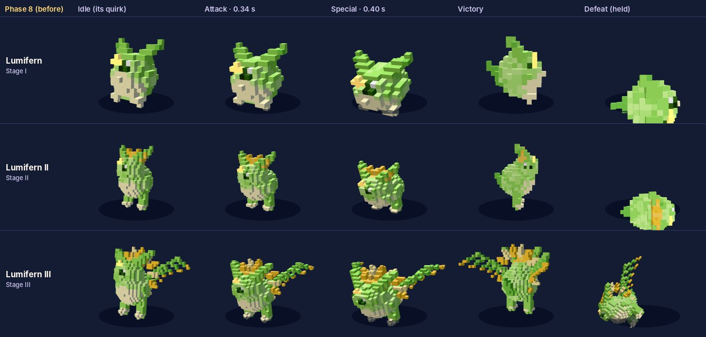</button></figure><figure class="after"><figcaption>After · Phase 8B</figcaption><button class="shot" data-full="screens8b/sheets/after/lumifern.jpg" aria-label="Lumifern line after, full size">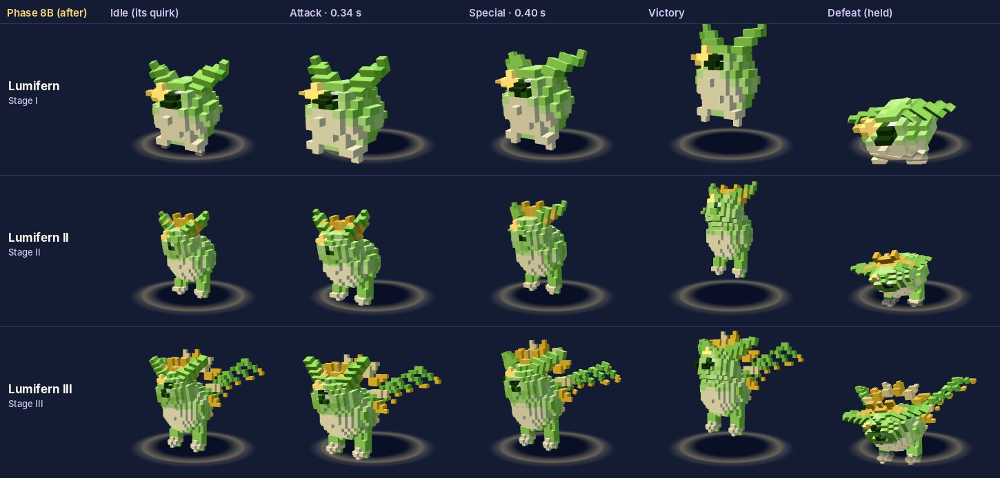</button></figure></div><figure class="vid"><figcaption>Lumifern II · idle · attack · special</figcaption><video src="screens8b/video/line-lumifern.mp4" autoplay loop muted playsinline preload="metadata" aria-label="Lumifern II: idle, attack and special animations side by side"></video></figure><div class="sounds"><div><b>Lumifern II · attack</b><audio controls preload="none" src="screens8b/sound/solarbloom-attack.mp3"></audio></div><div><b>Lumifern II · Radiant Burst</b><audio controls preload="none" src="screens8b/sound/solarbloom-special.mp3"></audio></div></div></article><article class="pair line" id="ln-umbrit"><h3>Umbrit line <small>Dark · Umbrit II · Umbrit III</small></h3><p>Round body; moving parts: head, tail, ears, floating parts, eyelids. Idle: a shy glance aside, ears flicking. Attack: a coil, a pounce and a bite. Special: draws up its cloak and sweeps it forward. Victory: a hop and a pirouette. Defeat: sinks into its shadow. Voice: soft purring chirps, deeper with each form. Its first form (Umbrit) is a Phase 8 showcase form and keeps its approved work; only II and III are new here.</p><div class="shots tall"><figure class="before"><figcaption>Before · Phase 8</figcaption><button class="shot" data-full="screens8b/sheets/before/umbrit.jpg" aria-label="Umbrit line before, full size">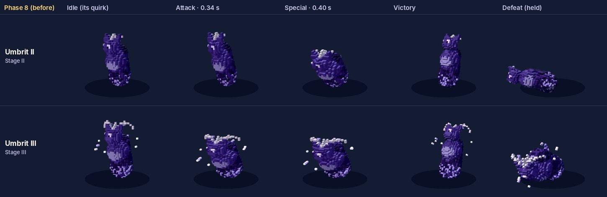</button></figure><figure class="after"><figcaption>After · Phase 8B</figcaption><button class="shot" data-full="screens8b/sheets/after/umbrit.jpg" aria-label="Umbrit line after, full size">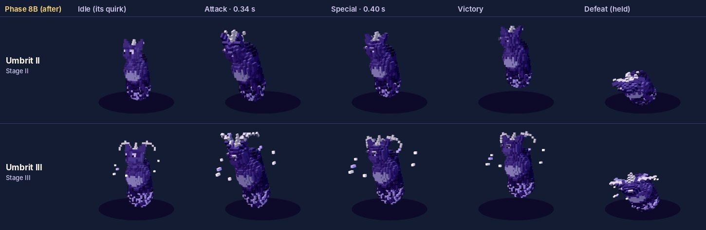</button></figure></div><figure class="vid"><figcaption>Umbrit III · idle · attack · special</figcaption><video src="screens8b/video/line-umbrit.mp4" autoplay loop muted playsinline preload="metadata" aria-label="Umbrit III: idle, attack and special animations side by side"></video></figure><div class="sounds"><div><b>Umbrit III · attack</b><audio controls preload="none" src="screens8b/sound/eclipsar-attack.mp3"></audio></div><div><b>Umbrit III · Eclipse Fang</b><audio controls preload="none" src="screens8b/sound/eclipsar-special.mp3"></audio></div></div></article><article class="pair line" id="ln-cannonis"><h3>Cannonis line <small>Water · Cannonis II · Cannonis III</small></h3><p>Shell beast; moving parts: head, jaw, tail, four legs, cannon, eyelids. Idle: sweeps its cannon across the horizon. Attack: aims, leans in, the barrel kicks. Special: rears and fires its cannon. Victory: a cannon salute. Defeat: folds into its shell. Voice: deep rumbles, booms and surf. Its first form (Cannonis) is a Phase 8 showcase form and keeps its approved work; only II and III are new here.</p><div class="shots tall"><figure class="before"><figcaption>Before · Phase 8</figcaption><button class="shot" data-full="screens8b/sheets/before/cannonis.jpg" aria-label="Cannonis line before, full size">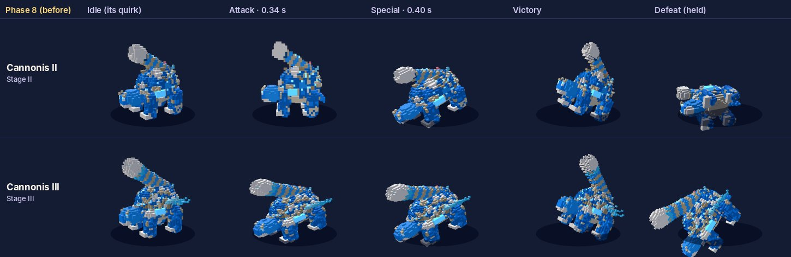</button></figure><figure class="after"><figcaption>After · Phase 8B</figcaption><button class="shot" data-full="screens8b/sheets/after/cannonis.jpg" aria-label="Cannonis line after, full size">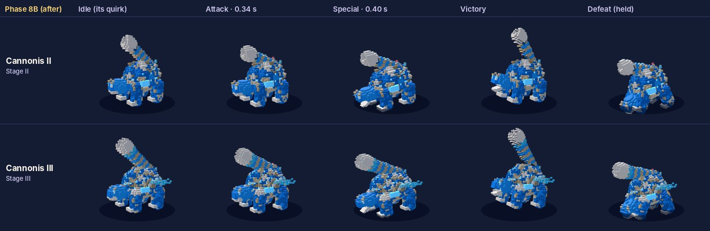</button></figure></div><figure class="vid"><figcaption>Cannonis II · idle · attack · special</figcaption><video src="screens8b/video/line-cannonis.mp4" autoplay loop muted playsinline preload="metadata" aria-label="Cannonis II: idle, attack and special animations side by side"></video></figure><div class="sounds"><div><b>Cannonis II · attack</b><audio controls preload="none" src="screens8b/sound/reefback-attack.mp3"></audio></div><div><b>Cannonis II · Riptide Dash</b><audio controls preload="none" src="screens8b/sound/reefback-special.mp3"></audio></div></div></article><article class="pair line" id="ln-kairyu"><h3>Kairyu line <small>Water · Kairyu · Kairyu II · Kairyu III</small></h3><p>Primate; moving parts: head, jaw, tail, arms, legs, eyelids. Idle: two springy hops, arms up. Attack: a wide arm swipe. Special: leaps on a wave onto the foe. Victory: a backflip. Defeat: slumps. Voice: wobbly, playful calls with splashes.</p><div class="shots tall"><figure class="before"><figcaption>Before · Phase 8</figcaption><button class="shot" data-full="screens8b/sheets/before/kairyu.jpg" aria-label="Kairyu line before, full size">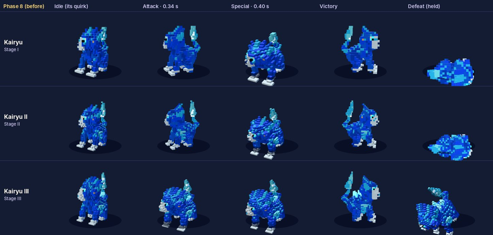</button></figure><figure class="after"><figcaption>After · Phase 8B</figcaption><button class="shot" data-full="screens8b/sheets/after/kairyu.jpg" aria-label="Kairyu line after, full size">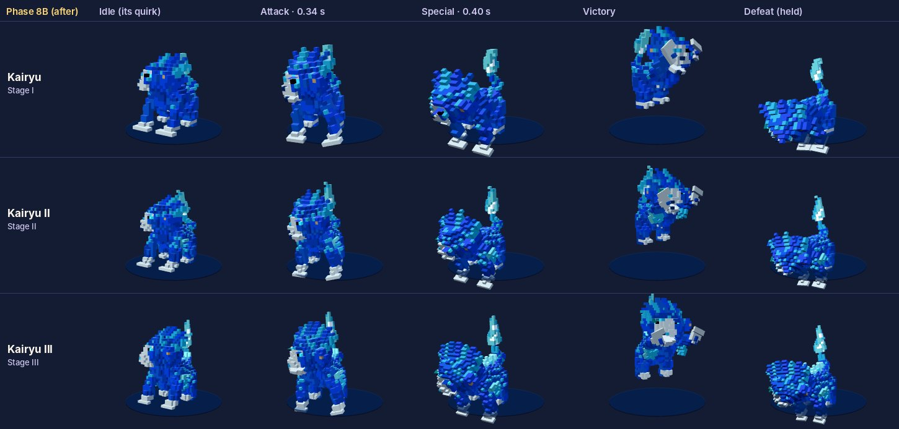</button></figure></div><figure class="vid"><figcaption>Kairyu III · idle · attack · special</figcaption><video src="screens8b/video/line-kairyu.mp4" autoplay loop muted playsinline preload="metadata" aria-label="Kairyu III: idle, attack and special animations side by side"></video></figure><div class="sounds"><div><b>Kairyu III · attack</b><audio controls preload="none" src="screens8b/sound/oceanfang-attack.mp3"></audio></div><div><b>Kairyu III · Abyssal Wave</b><audio controls preload="none" src="screens8b/sound/oceanfang-special.mp3"></audio></div></div></article><article class="pair line" id="ln-aquaflora"><h3>Aquaflora line <small>Water · Aquaflora · Aquaflora II · Aquaflora III</small></h3><p>Dragon; moving parts: head, jaw, tail, four legs, floating parts, eyelids. Idle: a slow S-curve through neck and head. Attack: draws back and strikes. Special: rises tall and strikes down. Victory: a proud coil. Defeat: droops low. Voice: an echoing whale-like song.</p><div class="shots tall"><figure class="before"><figcaption>Before · Phase 8</figcaption><button class="shot" data-full="screens8b/sheets/before/aquaflora.jpg" aria-label="Aquaflora line before, full size">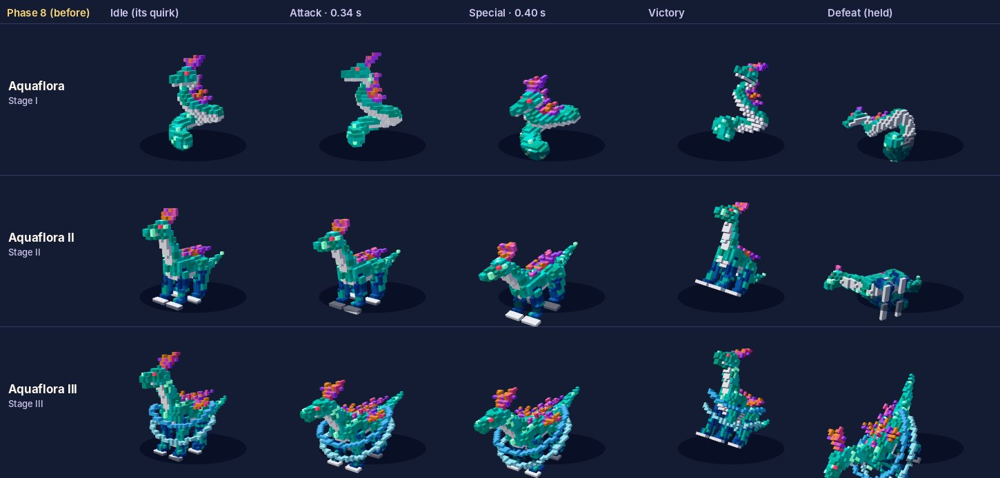</button></figure><figure class="after"><figcaption>After · Phase 8B</figcaption><button class="shot" data-full="screens8b/sheets/after/aquaflora.jpg" aria-label="Aquaflora line after, full size">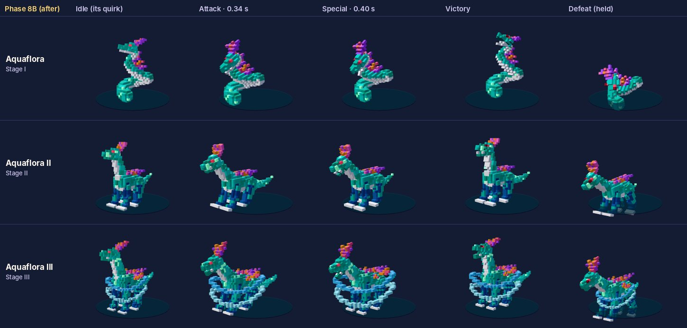</button></figure></div><figure class="vid"><figcaption>Aquaflora III · idle · attack · special</figcaption><video src="screens8b/video/line-aquaflora.mp4" autoplay loop muted playsinline preload="metadata" aria-label="Aquaflora III: idle, attack and special animations side by side"></video></figure><div class="sounds"><div><b>Aquaflora III · attack</b><audio controls preload="none" src="screens8b/sound/aquaflora3-attack.mp3"></audio></div><div><b>Aquaflora III · Abyssal Wave</b><audio controls preload="none" src="screens8b/sound/aquaflora3-special.mp3"></audio></div></div></article><article class="pair line" id="ln-gaiaroki"><h3>Gaiaroki line <small>Earth · Gaiaroki · Gaiaroki II · Gaiaroki III</small></h3><p>Primate; moving parts: head, jaw, tail, arms, legs, floating parts, eyelids. Idle: pounds its chest. Attack: pulls back and drives a fist. Special: leaps and slams both fists down. Victory: flexes both arms. Defeat: drops to its knees. Voice: gravelly growls and stone thuds.</p><div class="shots tall"><figure class="before"><figcaption>Before · Phase 8</figcaption><button class="shot" data-full="screens8b/sheets/before/gaiaroki.jpg" aria-label="Gaiaroki line before, full size">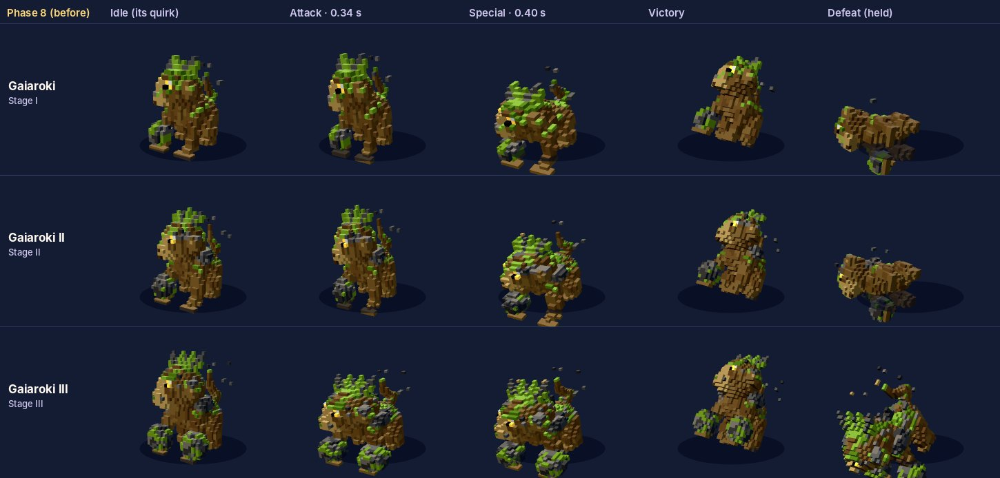</button></figure><figure class="after"><figcaption>After · Phase 8B</figcaption><button class="shot" data-full="screens8b/sheets/after/gaiaroki.jpg" aria-label="Gaiaroki line after, full size">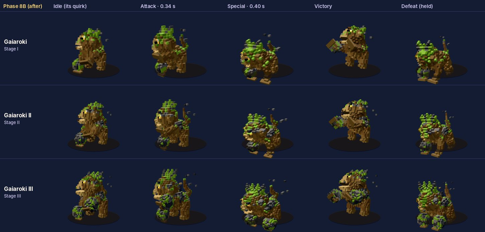</button></figure></div><figure class="vid"><figcaption>Gaiaroki II · idle · attack · special</figcaption><video src="screens8b/video/line-gaiaroki.mp4" autoplay loop muted playsinline preload="metadata" aria-label="Gaiaroki II: idle, attack and special animations side by side"></video></figure><div class="sounds"><div><b>Gaiaroki II · attack</b><audio controls preload="none" src="screens8b/sound/terraki-attack.mp3"></audio></div><div><b>Gaiaroki II · Earthquake</b><audio controls preload="none" src="screens8b/sound/terraki-special.mp3"></audio></div></div></article><article class="pair line" id="ln-pyrocell"><h3>Pyro-Core line <small>Earth · Pyro-Core · Pyro-Core II · Pyro-Core III</small></h3><p>Two-legged; moving parts: head, arms, legs, eyelids. Idle: a deep rumble shakes it, the core flaring. Attack: pulls back and drives a fist. Special: rears and stamps the ground. Victory: flexes both arms. Defeat: drops to its knees. Voice: kiln rumbles and crackle.</p><div class="shots tall"><figure class="before"><figcaption>Before · Phase 8</figcaption><button class="shot" data-full="screens8b/sheets/before/pyrocell.jpg" aria-label="Pyro-Core line before, full size">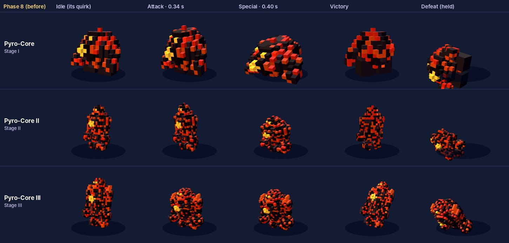</button></figure><figure class="after"><figcaption>After · Phase 8B</figcaption><button class="shot" data-full="screens8b/sheets/after/pyrocell.jpg" aria-label="Pyro-Core line after, full size">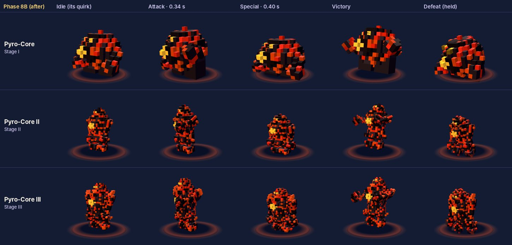</button></figure></div><figure class="vid"><figcaption>Pyro-Core III · idle · attack · special</figcaption><video src="screens8b/video/line-pyrocell.mp4" autoplay loop muted playsinline preload="metadata" aria-label="Pyro-Core III: idle, attack and special animations side by side"></video></figure><div class="sounds"><div><b>Pyro-Core III · attack</b><audio controls preload="none" src="screens8b/sound/pyrocore-attack.mp3"></audio></div><div><b>Pyro-Core III · Mountainfall</b><audio controls preload="none" src="screens8b/sound/pyrocore-special.mp3"></audio></div></div></article><article class="pair line" id="ln-acinus"><h3>Acinus line <small>Nature · Acinus · Acinus II · Acinus III</small></h3><p>Four-legged; moving parts: head, jaw, tail, four legs, eyelids. Idle: shakes its berry bush like a wet dog. Attack: head down, a skull-first charge. Special: rears and stamps the ground. Victory: head high, a happy shake. Defeat: lies down. Voice: low, gentle grunts and leaves.</p><div class="shots tall"><figure class="before"><figcaption>Before · Phase 8</figcaption><button class="shot" data-full="screens8b/sheets/before/acinus.jpg" aria-label="Acinus line before, full size">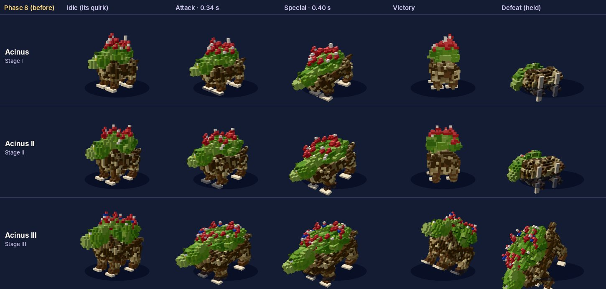</button></figure><figure class="after"><figcaption>After · Phase 8B</figcaption><button class="shot" data-full="screens8b/sheets/after/acinus.jpg" aria-label="Acinus line after, full size">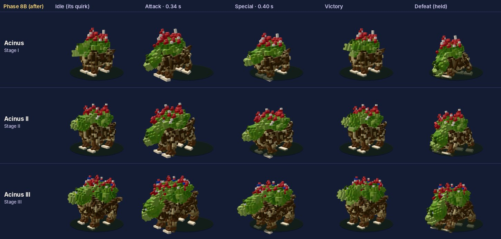</button></figure></div><figure class="vid"><figcaption>Acinus III · idle · attack · special</figcaption><video src="screens8b/video/line-acinus.mp4" autoplay loop muted playsinline preload="metadata" aria-label="Acinus III: idle, attack and special animations side by side"></video></figure><div class="sounds"><div><b>Acinus III · attack</b><audio controls preload="none" src="screens8b/sound/calyxar-attack.mp3"></audio></div><div><b>Acinus III · World Root</b><audio controls preload="none" src="screens8b/sound/calyxar-special.mp3"></audio></div></div></article><article class="pair line" id="ln-sylvaneer"><h3>Sylvaneer line <small>Nature · Sylvaneer · Sylvaneer II · Sylvaneer III</small></h3><p>Four-legged; moving parts: head, jaw, tail, four legs, eyelids. Idle: lifts its head and scans the treeline. Attack: antlers swept up through the foe. Special: rears and strikes the ground. Victory: rears up proudly. Defeat: drops to its knees. Voice: a stag’s bugle.</p><div class="shots tall"><figure class="before"><figcaption>Before · Phase 8</figcaption><button class="shot" data-full="screens8b/sheets/before/sylvaneer.jpg" aria-label="Sylvaneer line before, full size">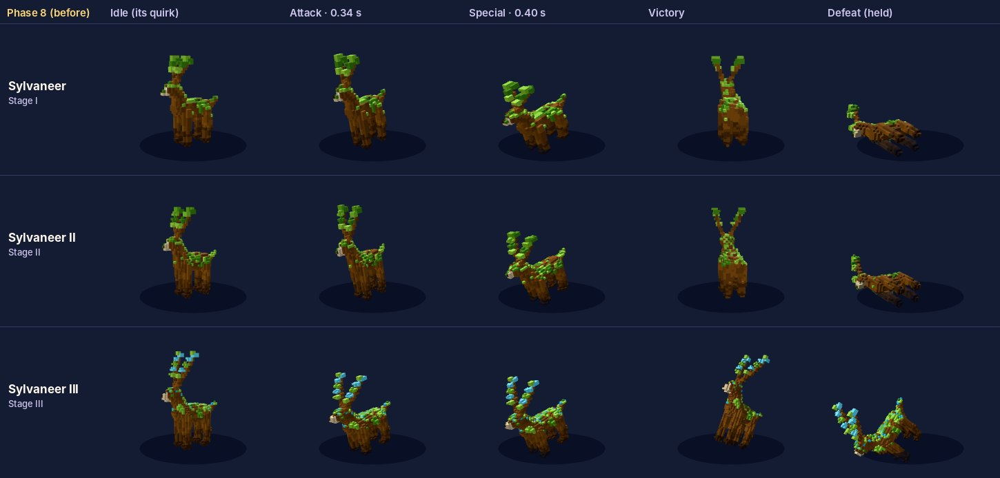</button></figure><figure class="after"><figcaption>After · Phase 8B</figcaption><button class="shot" data-full="screens8b/sheets/after/sylvaneer.jpg" aria-label="Sylvaneer line after, full size">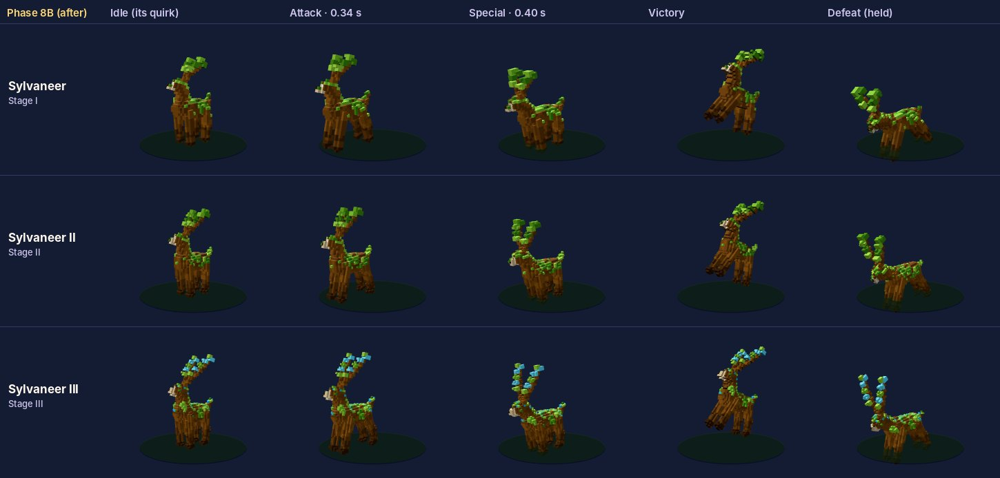</button></figure></div><figure class="vid"><figcaption>Sylvaneer II · idle · attack · special</figcaption><video src="screens8b/video/line-sylvaneer.mp4" autoplay loop muted playsinline preload="metadata" aria-label="Sylvaneer II: idle, attack and special animations side by side"></video></figure><div class="sounds"><div><b>Sylvaneer II · attack</b><audio controls preload="none" src="screens8b/sound/sylvaneer2-attack.mp3"></audio></div><div><b>Sylvaneer II · Verdant Crash</b><audio controls preload="none" src="screens8b/sound/sylvaneer2-special.mp3"></audio></div></div></article><article class="pair line" id="ln-terraflora"><h3>Terraflora line <small>Nature · Terraflora · Terraflora II · Terraflora III</small></h3><p>Two-legged; moving parts: head, arms, legs, floating parts, eyelids. Idle: rustles its leaves. Attack: a swing of the crown or a branch arm. Special: swells up from its roots, crown lifting. Victory: opens up like a flower. Defeat: wilts. Voice: a hollow, wooden song.</p><div class="shots tall"><figure class="before"><figcaption>Before · Phase 8</figcaption><button class="shot" data-full="screens8b/sheets/before/terraflora.jpg" aria-label="Terraflora line before, full size">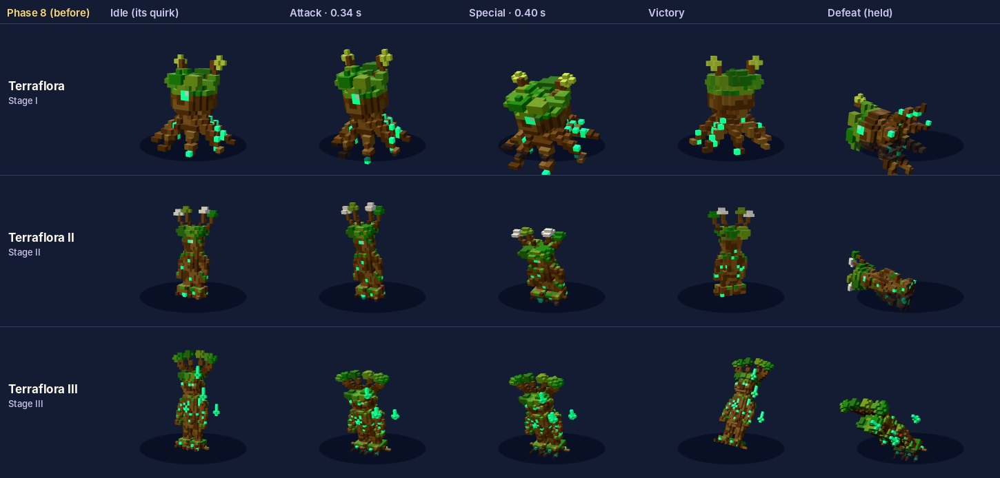</button></figure><figure class="after"><figcaption>After · Phase 8B</figcaption><button class="shot" data-full="screens8b/sheets/after/terraflora.jpg" aria-label="Terraflora line after, full size">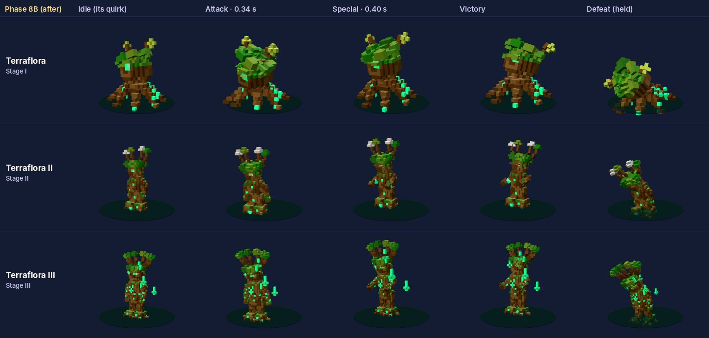</button></figure></div><figure class="vid"><figcaption>Terraflora · idle · attack · special</figcaption><video src="screens8b/video/line-terraflora.mp4" autoplay loop muted playsinline preload="metadata" aria-label="Terraflora: idle, attack and special animations side by side"></video></figure><div class="sounds"><div><b>Terraflora · attack</b><audio controls preload="none" src="screens8b/sound/terraflora-attack.mp3"></audio></div><div><b>Terraflora · Leaf Guard</b><audio controls preload="none" src="screens8b/sound/terraflora-special.mp3"></audio></div></div></article><article class="pair line" id="ln-emberix"><h3>Emberix line <small>Fire · Emberix · Emberix II · Emberix III</small></h3><p>Four-legged; moving parts: head, jaw, tail, four legs, eyelids. Idle: a tail wag and a curious head tilt. Attack: a crouch, a spring, jaws snapping. Special: rears and roars, flames flaring. Victory: happy hops and wiggles. Defeat: lies down. Voice: bright yips with frost-fire crackle.</p><div class="shots tall"><figure class="before"><figcaption>Before · Phase 8</figcaption><button class="shot" data-full="screens8b/sheets/before/emberix.jpg" aria-label="Emberix line before, full size">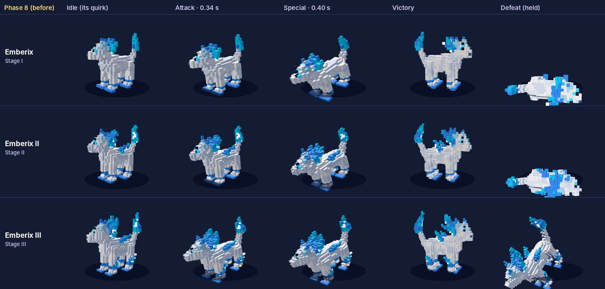</button></figure><figure class="after"><figcaption>After · Phase 8B</figcaption><button class="shot" data-full="screens8b/sheets/after/emberix.jpg" aria-label="Emberix line after, full size">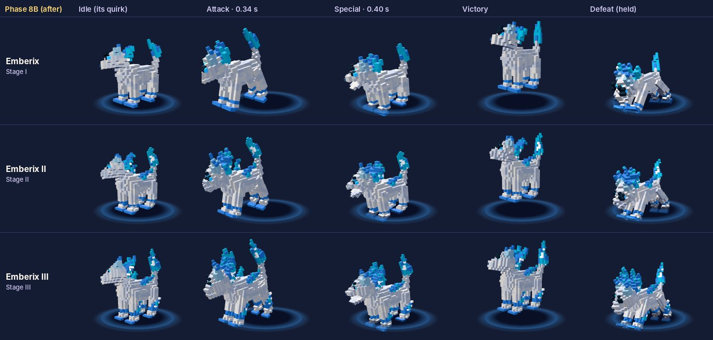</button></figure></div><figure class="vid"><figcaption>Emberix III · idle · attack · special</figcaption><video src="screens8b/video/line-emberix.mp4" autoplay loop muted playsinline preload="metadata" aria-label="Emberix III: idle, attack and special animations side by side"></video></figure><div class="sounds"><div><b>Emberix III · attack</b><audio controls preload="none" src="screens8b/sound/infernox-attack.mp3"></audio></div><div><b>Emberix III · Inferno</b><audio controls preload="none" src="screens8b/sound/infernox-special.mp3"></audio></div></div></article><article class="pair line" id="ln-pyrokai"><h3>Pyrokai line <small>Fire · Pyrokai · Pyrokai II · Pyrokai III</small></h3><p>Primate; moving parts: head, jaw, tail, arms, legs, eyelids. Idle: shadow-boxes: jab, jab, cross. Attack: pulls back and drives a fist. Special: a leaping strike from above. Victory: flexes both arms. Defeat: slumps. Voice: hooting monkey calls.</p><div class="shots tall"><figure class="before"><figcaption>Before · Phase 8</figcaption><button class="shot" data-full="screens8b/sheets/before/pyrokai.jpg" aria-label="Pyrokai line before, full size">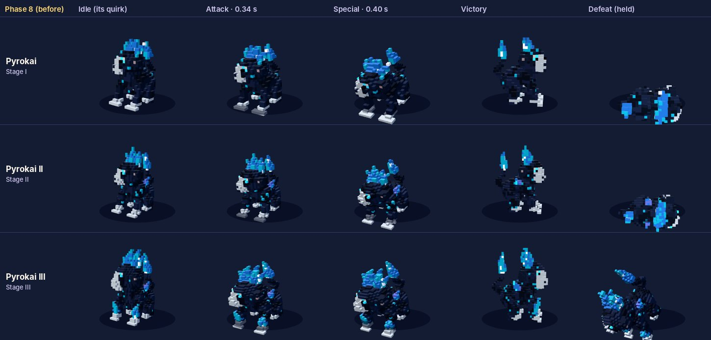</button></figure><figure class="after"><figcaption>After · Phase 8B</figcaption><button class="shot" data-full="screens8b/sheets/after/pyrokai.jpg" aria-label="Pyrokai line after, full size">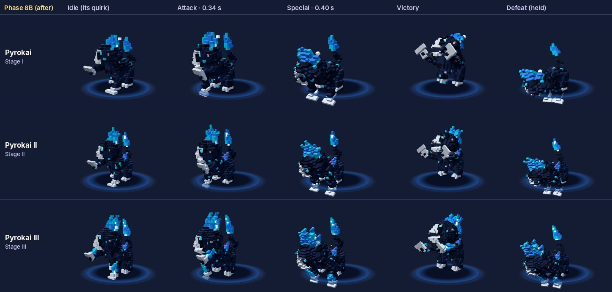</button></figure></div><figure class="vid"><figcaption>Pyrokai II · idle · attack · special</figcaption><video src="screens8b/video/line-pyrokai.mp4" autoplay loop muted playsinline preload="metadata" aria-label="Pyrokai II: idle, attack and special animations side by side"></video></figure><div class="sounds"><div><b>Pyrokai II · attack</b><audio controls preload="none" src="screens8b/sound/emberkai-attack.mp3"></audio></div><div><b>Pyrokai II · Blaze Rush</b><audio controls preload="none" src="screens8b/sound/emberkai-special.mp3"></audio></div></div></article><article class="pair line" id="ln-igniflare"><h3>Igniflare line <small>Fire · Igniflare · Igniflare II · Igniflare III</small></h3><p>Dragon; moving parts: head, jaw, tail, wings, four legs, eyelids. Idle: stretches its wings with a smoky yawn. Attack: a crouch, a spring, jaws snapping. Special: rears, wings flared, and breathes fire. Victory: rears and roars, wings wide. Defeat: topples, wings slack. Voice: roars and fire.</p><div class="shots tall"><figure class="before"><figcaption>Before · Phase 8</figcaption><button class="shot" data-full="screens8b/sheets/before/igniflare.jpg" aria-label="Igniflare line before, full size">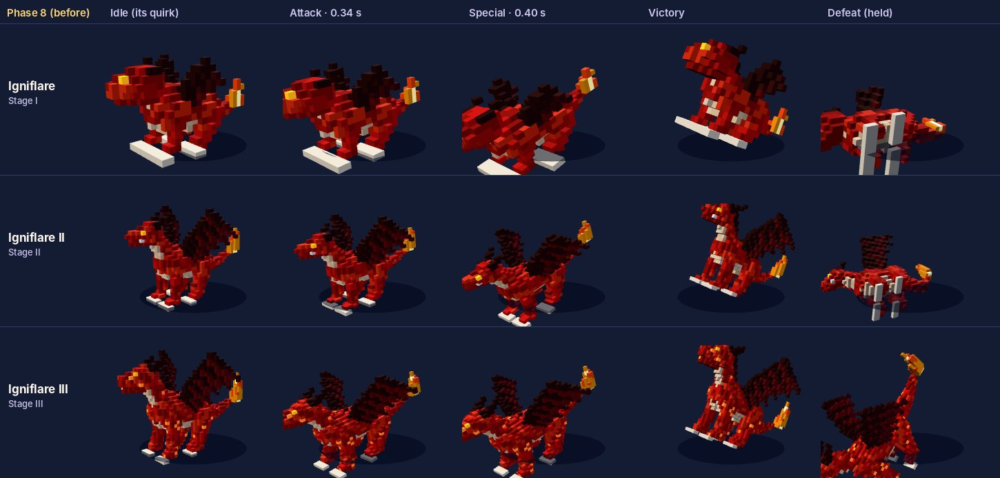</button></figure><figure class="after"><figcaption>After · Phase 8B</figcaption><button class="shot" data-full="screens8b/sheets/after/igniflare.jpg" aria-label="Igniflare line after, full size">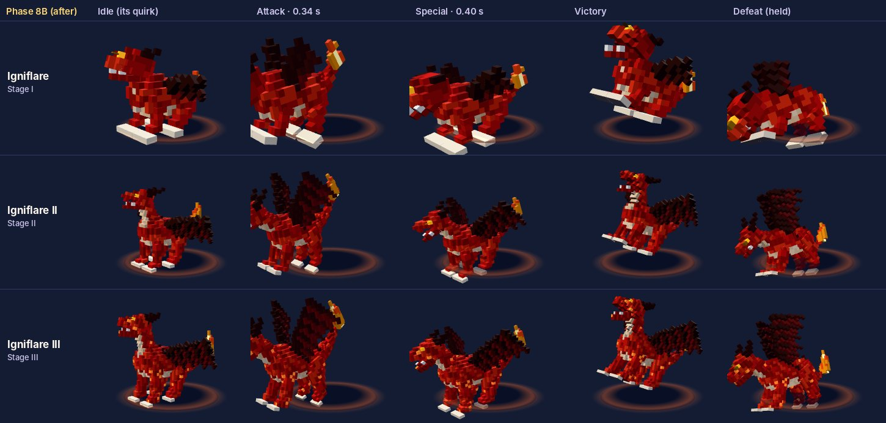</button></figure></div><figure class="vid"><figcaption>Igniflare III · idle · attack · special</figcaption><video src="screens8b/video/line-igniflare.mp4" autoplay loop muted playsinline preload="metadata" aria-label="Igniflare III: idle, attack and special animations side by side"></video></figure><div class="sounds"><div><b>Igniflare III · attack</b><audio controls preload="none" src="screens8b/sound/ignivor-attack.mp3"></audio></div><div><b>Igniflare III · Inferno</b><audio controls preload="none" src="screens8b/sound/ignivor-special.mp3"></audio></div></div></article><article class="pair line" id="ln-pyrospark"><h3>Pyro-Phoenix line <small>Fire · Pyro-Phoenix · Pyro-Phoenix II · Pyro-Phoenix III</small></h3><p>Bird; moving parts: head, tail, wings, legs, eyelids. Idle: a restless flutter and a hop. Attack: wings flare, a diving peck. Special: soars up and dives. Victory: flaps and lifts off. Defeat: flops down. Voice: bird tweets and sparks.</p><div class="shots tall"><figure class="before"><figcaption>Before · Phase 8</figcaption><button class="shot" data-full="screens8b/sheets/before/pyrospark.jpg" aria-label="Pyro-Phoenix line before, full size">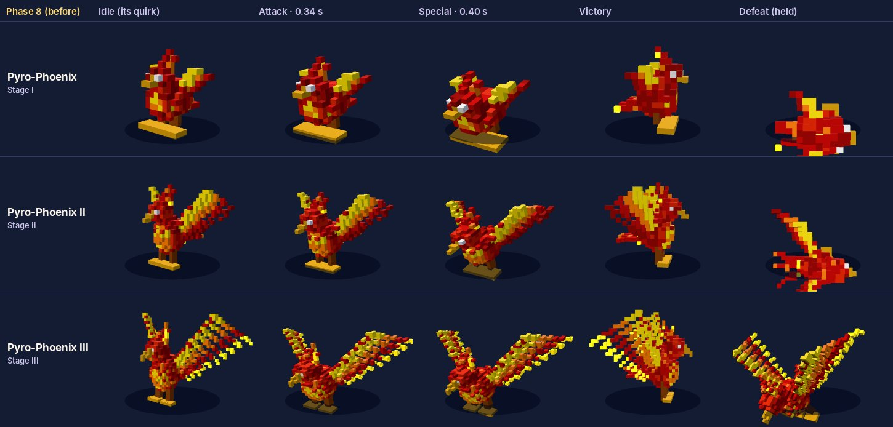</button></figure><figure class="after"><figcaption>After · Phase 8B</figcaption><button class="shot" data-full="screens8b/sheets/after/pyrospark.jpg" aria-label="Pyro-Phoenix line after, full size">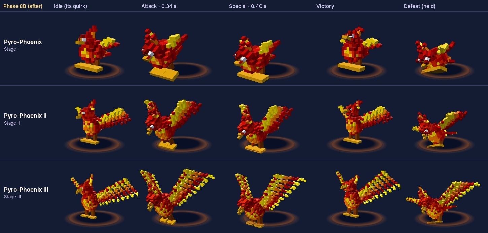</button></figure></div><figure class="vid"><figcaption>Pyro-Phoenix II · idle · attack · special</figcaption><video src="screens8b/video/line-pyrospark.mp4" autoplay loop muted playsinline preload="metadata" aria-label="Pyro-Phoenix II: idle, attack and special animations side by side"></video></figure><div class="sounds"><div><b>Pyro-Phoenix II · attack</b><audio controls preload="none" src="screens8b/sound/pyrohawk-attack.mp3"></audio></div><div><b>Pyro-Phoenix II · Blaze Rush</b><audio controls preload="none" src="screens8b/sound/pyrohawk-special.mp3"></audio></div></div></article><article class="pair line" id="ln-zephyr"><h3>Zephyr line <small>Wind · Zephyr · Zephyr II · Zephyr III</small></h3><p>Dragon; moving parts: head, jaw, tail, wings, four legs, floating parts, eyelids. Idle: preens its wing feathers. Attack: a lunge with a raking claw. Special: climbs and dives in a streak. Victory: big wingbeats and a call. Defeat: topples, wings slack. Voice: a raptor’s cry and gusts.</p><div class="shots tall"><figure class="before"><figcaption>Before · Phase 8</figcaption><button class="shot" data-full="screens8b/sheets/before/zephyr.jpg" aria-label="Zephyr line before, full size">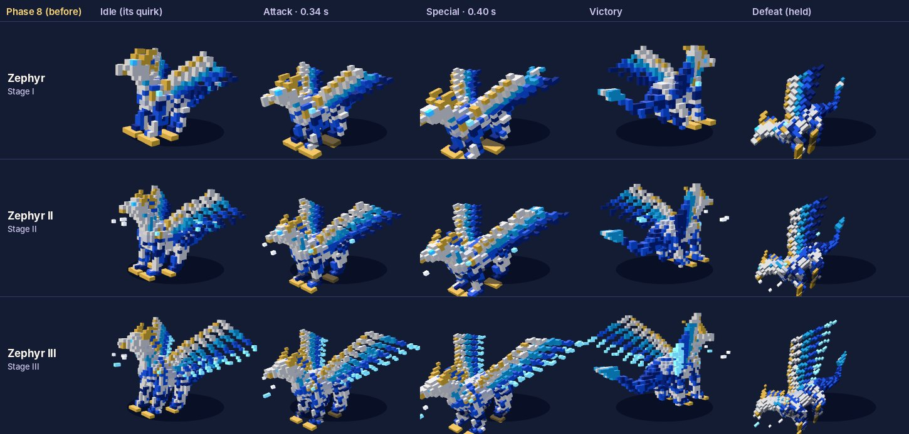</button></figure><figure class="after"><figcaption>After · Phase 8B</figcaption><button class="shot" data-full="screens8b/sheets/after/zephyr.jpg" aria-label="Zephyr line after, full size">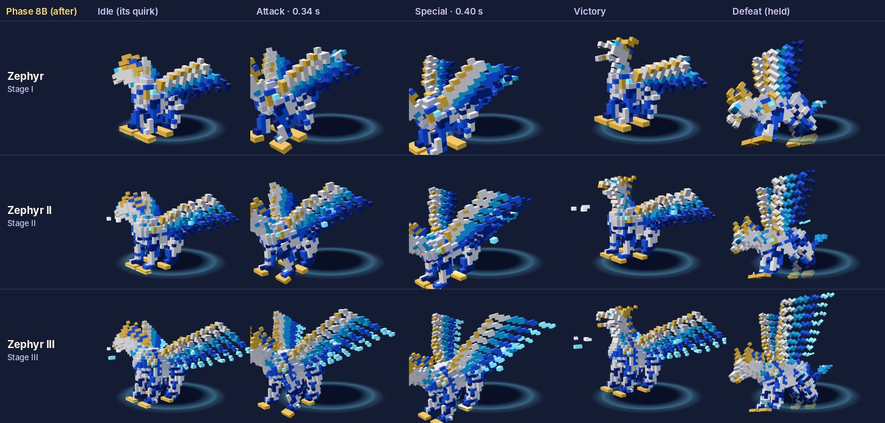</button></figure></div><figure class="vid"><figcaption>Zephyr III · idle · attack · special</figcaption><video src="screens8b/video/line-zephyr.mp4" autoplay loop muted playsinline preload="metadata" aria-label="Zephyr III: idle, attack and special animations side by side"></video></figure><div class="sounds"><div><b>Zephyr III · attack</b><audio controls preload="none" src="screens8b/sound/stormbringer-attack.mp3"></audio></div><div><b>Zephyr III · Storm Dive</b><audio controls preload="none" src="screens8b/sound/stormbringer-special.mp3"></audio></div></div></article><article class="pair line" id="ln-voltar"><h3>Voltar line <small>Dark · Voltar · Voltar II · Voltar III</small></h3><p>Two-legged; moving parts: head, arms, legs, floating parts, ring, eyelids. Idle: juggles, hat bobbing. Attack: a cheeky jab with a hop. Special: a theatrical bow and a flourish. Victory: a little dance. Defeat: collapses. Voice: cheeky giggles and bells.</p><div class="shots tall"><figure class="before"><figcaption>Before · Phase 8</figcaption><button class="shot" data-full="screens8b/sheets/before/voltar.jpg" aria-label="Voltar line before, full size">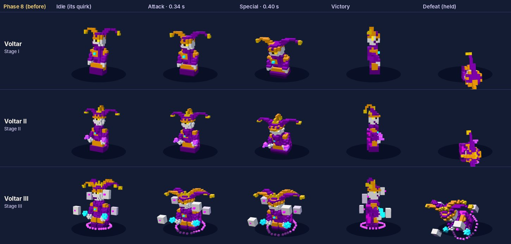</button></figure><figure class="after"><figcaption>After · Phase 8B</figcaption><button class="shot" data-full="screens8b/sheets/after/voltar.jpg" aria-label="Voltar line after, full size">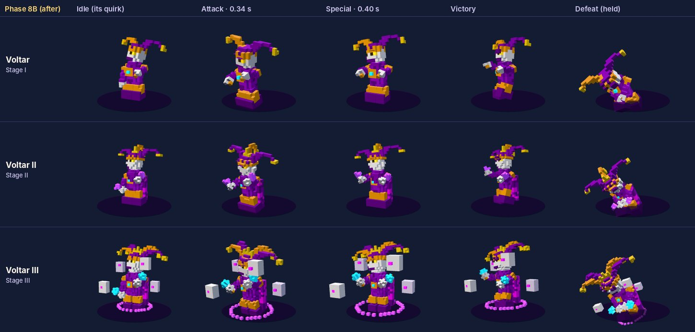</button></figure></div><figure class="vid"><figcaption>Voltar III · idle · attack · special</figcaption><video src="screens8b/video/line-voltar.mp4" autoplay loop muted playsinline preload="metadata" aria-label="Voltar III: idle, attack and special animations side by side"></video></figure><div class="sounds"><div><b>Voltar III · attack</b><audio controls preload="none" src="screens8b/sound/voltar3-attack.mp3"></audio></div><div><b>Voltar III · Eclipse Fang</b><audio controls preload="none" src="screens8b/sound/voltar3-special.mp3"></audio></div></div></article><article class="pair line" id="ln-zeep"><h3>Zeep line <small>Metal · Zeep · Zeep II · Zeep III</small></h3><p>Construct; moving parts: head, tail, four legs, ring, eyelids. Idle: tilts its head with a beep and taps a foot. Attack: a short ram with its head. Special: winds up its circuits and lunges. Victory: a happy spin. Defeat: powers down. Voice: robot beeps.</p><div class="shots tall"><figure class="before"><figcaption>Before · Phase 8</figcaption><button class="shot" data-full="screens8b/sheets/before/zeep.jpg" aria-label="Zeep line before, full size">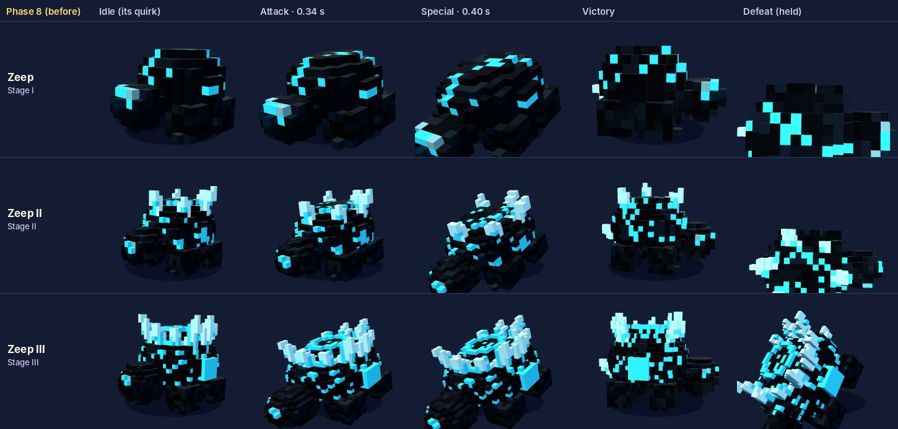</button></figure><figure class="after"><figcaption>After · Phase 8B</figcaption><button class="shot" data-full="screens8b/sheets/after/zeep.jpg" aria-label="Zeep line after, full size">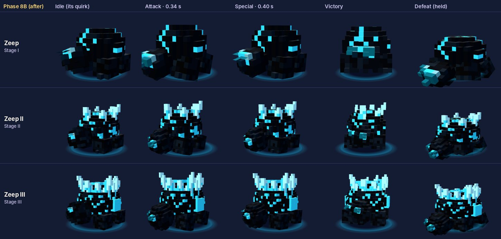</button></figure></div><figure class="vid"><figcaption>Zeep II · idle · attack · special</figcaption><video src="screens8b/video/line-zeep.mp4" autoplay loop muted playsinline preload="metadata" aria-label="Zeep II: idle, attack and special animations side by side"></video></figure><div class="sounds"><div><b>Zeep II · attack</b><audio controls preload="none" src="screens8b/sound/zeep2-attack.mp3"></audio></div><div><b>Zeep II · Blade Form</b><audio controls preload="none" src="screens8b/sound/zeep2-special.mp3"></audio></div></div></article><article class="pair line" id="ln-lumi"><h3>Lumi line <small>Light · Lumi · Lumi II · Lumi III</small></h3><p>Floating shell; moving parts: wings, floating parts, ring, eyelids. Idle: a slow half-twirl with a lift. Attack: bobs forward and pulses. Special: swells with light and bursts. Victory: a twirl in the air. Defeat: dims and sinks. Voice: an echoing light song.</p><div class="shots tall"><figure class="before"><figcaption>Before · Phase 8</figcaption><button class="shot" data-full="screens8b/sheets/before/lumi.jpg" aria-label="Lumi line before, full size">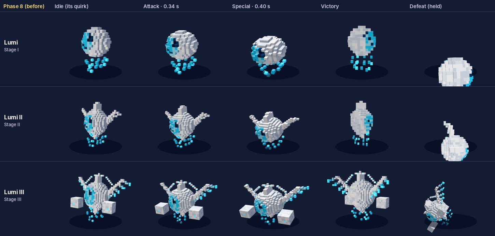</button></figure><figure class="after"><figcaption>After · Phase 8B</figcaption><button class="shot" data-full="screens8b/sheets/after/lumi.jpg" aria-label="Lumi line after, full size">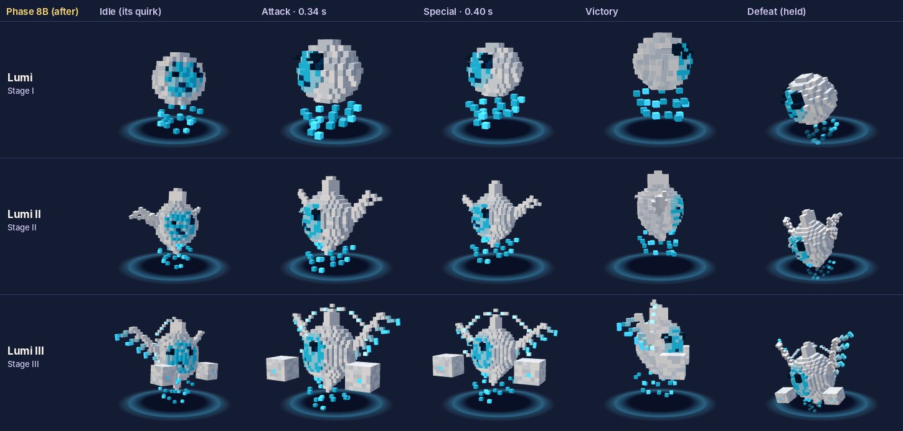</button></figure></div><figure class="vid"><figcaption>Lumi III · idle · attack · special</figcaption><video src="screens8b/video/line-lumi.mp4" autoplay loop muted playsinline preload="metadata" aria-label="Lumi III: idle, attack and special animations side by side"></video></figure><div class="sounds"><div><b>Lumi III · attack</b><audio controls preload="none" src="screens8b/sound/lumi3-attack.mp3"></audio></div><div><b>Lumi III · Solar Flare</b><audio controls preload="none" src="screens8b/sound/lumi3-special.mp3"></audio></div></div></article><article class="pair line" id="ln-meta"><h3>Meta line <small>Metal · Meta · Meta II · Meta III</small></h3><p>Two-legged; moving parts: head, arms, legs, hair or crown, eyelids. Idle: tilts its head and waves hello. Attack: draws back and strikes. Special: gathers power through raised arms and hair. Victory: waves. Defeat: drops to its knees. Voice: digital chatter.</p><div class="shots tall"><figure class="before"><figcaption>Before · Phase 8</figcaption><button class="shot" data-full="screens8b/sheets/before/meta.jpg" aria-label="Meta line before, full size">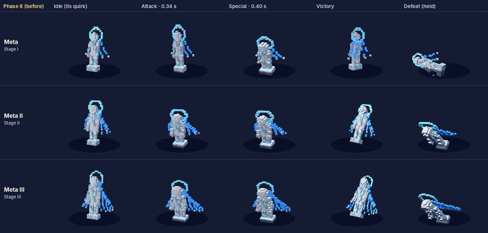</button></figure><figure class="after"><figcaption>After · Phase 8B</figcaption><button class="shot" data-full="screens8b/sheets/after/meta.jpg" aria-label="Meta line after, full size">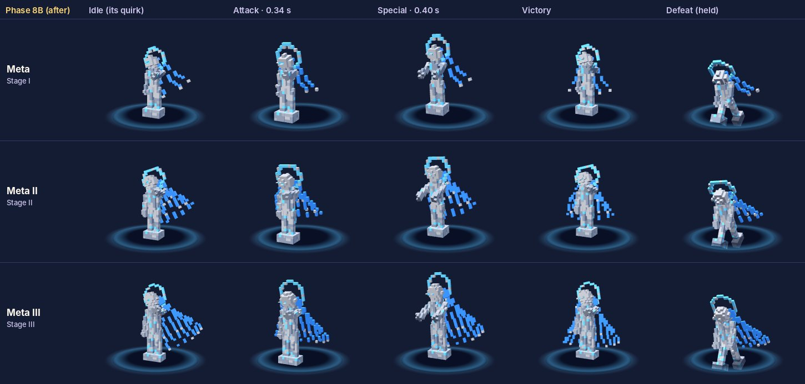</button></figure></div><figure class="vid"><figcaption>Meta III · idle · attack · special</figcaption><video src="screens8b/video/line-meta.mp4" autoplay loop muted playsinline preload="metadata" aria-label="Meta III: idle, attack and special animations side by side"></video></figure><div class="sounds"><div><b>Meta III · attack</b><audio controls preload="none" src="screens8b/sound/meta-attack.mp3"></audio></div><div><b>Meta III · Overclock</b><audio controls preload="none" src="screens8b/sound/meta-special.mp3"></audio></div></div></article><article class="pair line" id="ln-atem"><h3>Atem line <small>Metal · Atem · Atem II · Atem III</small></h3><p>Two-legged; moving parts: head, arms, legs, eyelids. Idle: a tactical scan, blade arm half raised. Attack: its blade arm cuts down. Special: crosses its arms, then slashes out. Victory: a crisp salute. Defeat: drops to its knees. Voice: servo whirs and blade rings.</p><div class="shots tall"><figure class="before"><figcaption>Before · Phase 8</figcaption><button class="shot" data-full="screens8b/sheets/before/atem.jpg" aria-label="Atem line before, full size">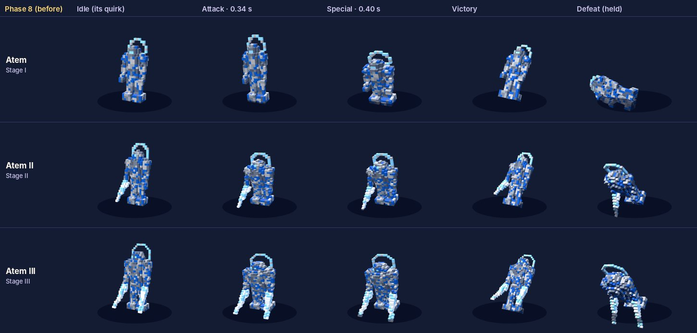</button></figure><figure class="after"><figcaption>After · Phase 8B</figcaption><button class="shot" data-full="screens8b/sheets/after/atem.jpg" aria-label="Atem line after, full size">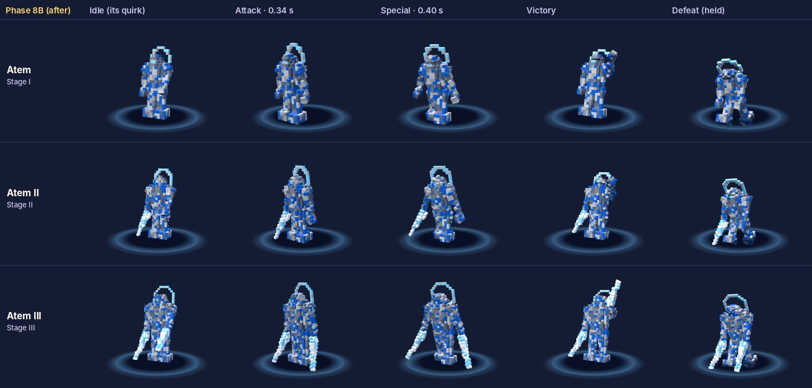</button></figure></div><figure class="vid"><figcaption>Atem II · idle · attack · special</figcaption><video src="screens8b/video/line-atem.mp4" autoplay loop muted playsinline preload="metadata" aria-label="Atem II: idle, attack and special animations side by side"></video></figure><div class="sounds"><div><b>Atem II · attack</b><audio controls preload="none" src="screens8b/sound/atem2-attack.mp3"></audio></div><div><b>Atem II · Blade Form</b><audio controls preload="none" src="screens8b/sound/atem2-special.mp3"></audio></div></div></article>
  </section>

  <section id="game"><header><h2>In the game</h2><p>The details screen, then six battle moves in the arena, Phase 8 against Phase 8B. The moves were captured in slow motion and play back at real speed, with the hit landing on the foe at 0.48 s as in battle. In Phase 8 every roster move was the same generic projectile or slash in its element's colours; now each has its own sequence, in the attacker's colours, leaving from its mouth, hand or chest:</p><ul class="moves"><li><b>Glow Pulse</b> light gathers at the mouth, a soft orb crosses, a ring of light opens on the foe</li><li><b>Sun Sprout</b> a seed of light is lobbed, bursts into leaves, and warmth flows back</li><li><b>Radiant Burst</b> a column of light, a flash at the mouth, a beam, petals of light bloom on the foe</li><li><b>Solar Flare</b> a crown of sunlight forms over the foe, then the rays crash down</li><li><b>Dusk Rend</b> three claws of folded twilight cross the foe</li><li><b>Eclipse Fang</b> a dark moon passes over the foe, jaws of shadow close, strength flows back</li><li><b>Vine Whip</b> a vine lashes out in an arc and cracks across the foe</li><li><b>Leaf Guard</b> leaves spiral up around it and settle as a shield</li><li><b>Verdant Crash</b> a thicket bursts up under the foe</li><li><b>World Root</b> roots race along the ground, rise around the foe and drink its strength</li><li><b>Ember Flick</b> a spray of sparks from the mouth and a spit of flame</li><li><b>Flare Bite</b> flames gather at the jaws, two arcs of fire snap shut on the foe</li><li><b>Blaze Rush</b> a charging dash that leaves a trail of fire, ending in a blast</li><li><b>Inferno</b> flames rise around it, a ring of fire erupts around the foe, then a pillar of flame</li><li><b>Riptide Dash</b> it rides a current through the foe; spray, then a whirl of water</li><li><b>Abyssal Wave</b> the deep sea rises behind it as a wall and crashes over the foe</li><li><b>Pebble Toss</b> a volley of pebbles, thrown with enthusiasm</li><li><b>Boulder Roll</b> a boulder rolls along the ground and slams into the foe</li><li><b>Earthquake</b> the stamp cracks the ground; debris leaps along the line to the foe</li><li><b>Mountainfall</b> a landslide of living rock falls on the foe</li><li><b>Gust</b> three snapping streaks of wind</li><li><b>Cyclone Spin</b> a little tornado wraps the foe</li><li><b>Gale Strike</b> a wide wall of wind with gold glints</li><li><b>Storm Dive</b> a storm gathers above the foe; a diving streak, lightning</li><li><b>Gear Strike</b> a mechanical clang, sparks and a spinning gear ring</li><li><b>Iron Wall</b> a wall of steel plates assembles in front of it</li><li><b>Blade Form</b> a glint runs down the arm, then a great slash</li><li><b>Overclock</b> a surge of current runs up it, then arcs jump to the foe</li></ul><p>The four Phase 8 sequences the roster shares (Shade Nip, Gloom Veil, Bubble Pop, Tidal Surge) stay exactly as approved for Umbrit and Cannonis and take each attacker's own colours.</p></header>
    <div class="pair"><h3>Emberix III · details screen</h3><p>Opens at its own three-quarter angle on a frost-blue ground light; tap it for a victory and its voice. Special now joins the clip buttons.</p><div class="shots"><figure class="before"><figcaption>Before · Phase 8</figcaption><button class="shot" data-full="screens8b/img/before/detail-infernox.jpg" aria-label="Emberix III · details screen, before, full size">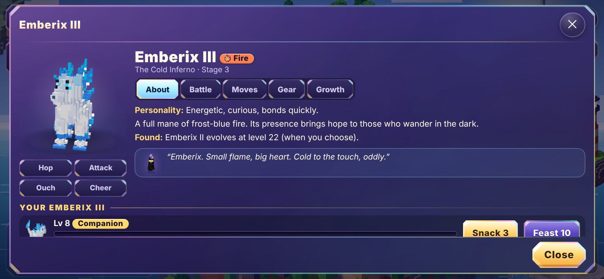</button></figure><figure class="after"><figcaption>After · Phase 8B</figcaption><button class="shot" data-full="screens8b/img/after/detail-infernox.jpg" aria-label="Emberix III · details screen, after, full size">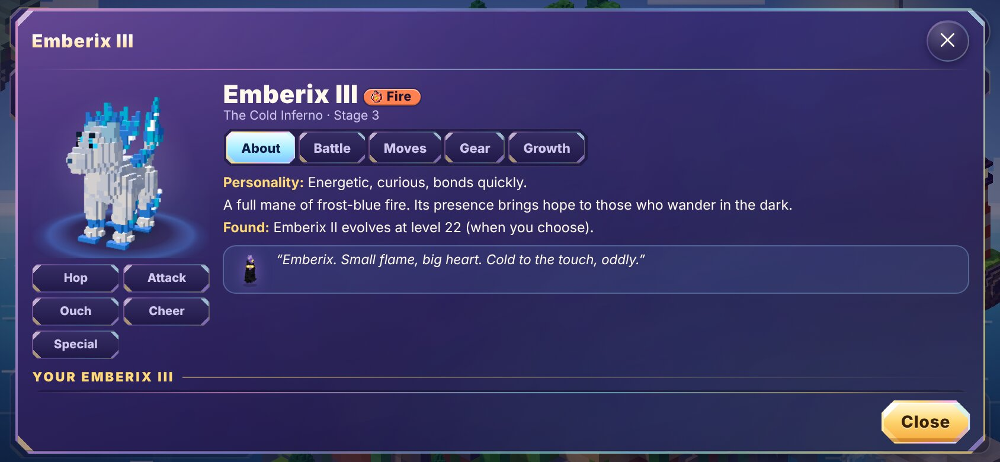</button></figure></div></div><div class="pair"><h3>Kairyu III · details screen</h3><p>Standing on its tide pool; its fins, tail and jaw move on their own.</p><div class="shots"><figure class="before"><figcaption>Before · Phase 8</figcaption><button class="shot" data-full="screens8b/img/before/detail-oceanfang.jpg" aria-label="Kairyu III · details screen, before, full size">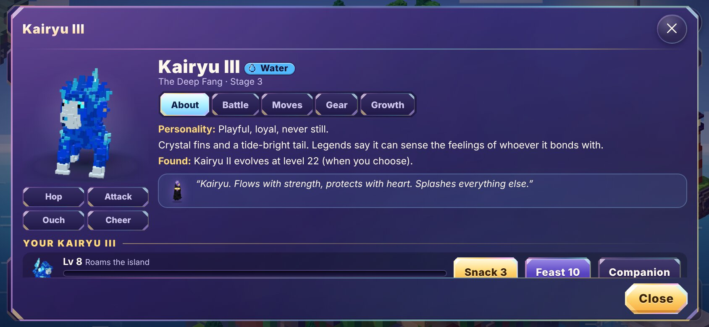</button></figure><figure class="after"><figcaption>After · Phase 8B</figcaption><button class="shot" data-full="screens8b/img/after/detail-oceanfang.jpg" aria-label="Kairyu III · details screen, after, full size">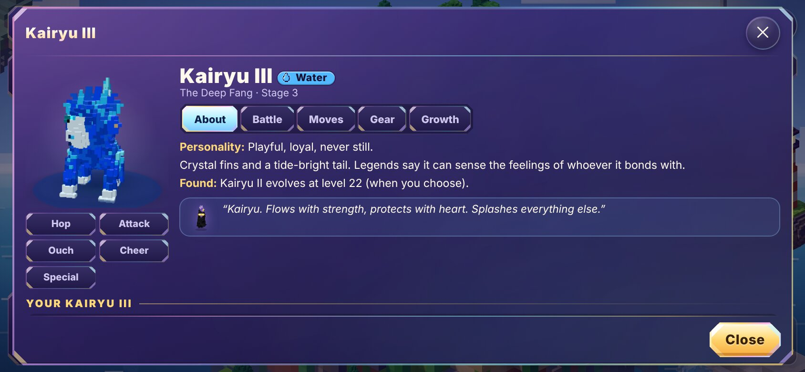</button></figure></div></div><div class="pair"><h3>Igniflare III · details screen</h3><p>Wings, jaw, tail and legs in parts, on a fire-orange ground light.</p><div class="shots"><figure class="before"><figcaption>Before · Phase 8</figcaption><button class="shot" data-full="screens8b/img/before/detail-ignivor.jpg" aria-label="Igniflare III · details screen, before, full size">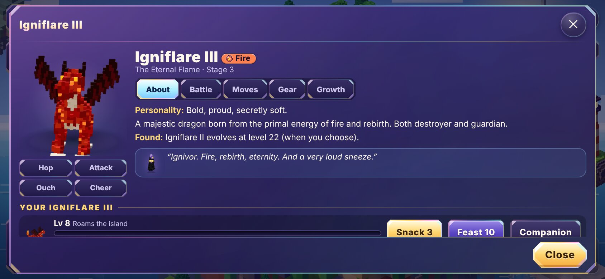</button></figure><figure class="after"><figcaption>After · Phase 8B</figcaption><button class="shot" data-full="screens8b/img/after/detail-ignivor.jpg" aria-label="Igniflare III · details screen, after, full size">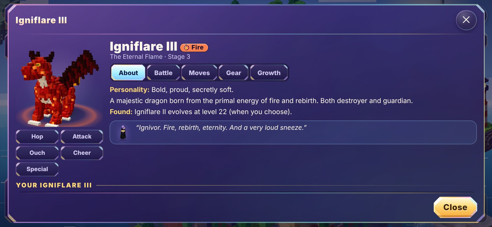</button></figure></div></div><div class="pair"><h3>Lumi III · details screen</h3><p>Its ring and wings drift; the side crystals orbit slowly.</p><div class="shots"><figure class="before"><figcaption>Before · Phase 8</figcaption><button class="shot" data-full="screens8b/img/before/detail-lumi3.jpg" aria-label="Lumi III · details screen, before, full size">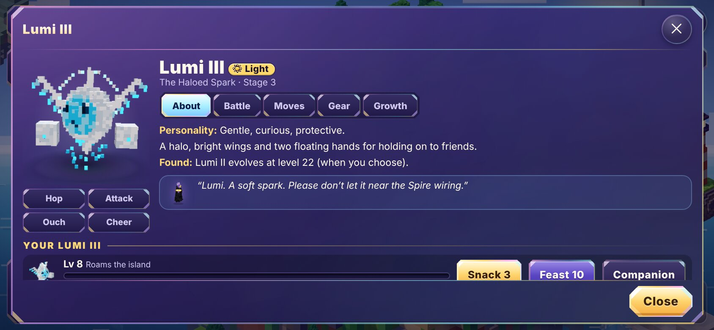</button></figure><figure class="after"><figcaption>After · Phase 8B</figcaption><button class="shot" data-full="screens8b/img/after/detail-lumi3.jpg" aria-label="Lumi III · details screen, after, full size">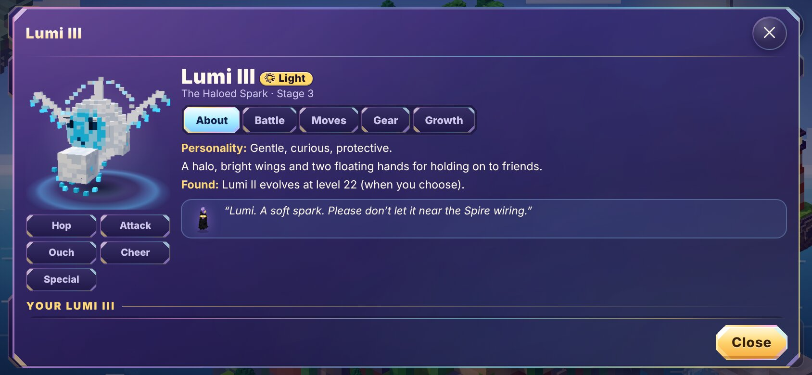</button></figure></div></div><div class="pair"><h3>Zeep III · details screen</h3><p>The halo turns; the construct blinks and beeps.</p><div class="shots"><figure class="before"><figcaption>Before · Phase 8</figcaption><button class="shot" data-full="screens8b/img/before/detail-zeep3.jpg" aria-label="Zeep III · details screen, before, full size">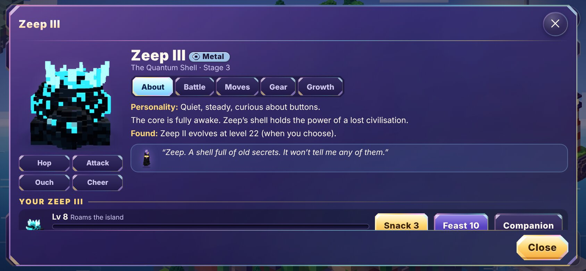</button></figure><figure class="after"><figcaption>After · Phase 8B</figcaption><button class="shot" data-full="screens8b/img/after/detail-zeep3.jpg" aria-label="Zeep III · details screen, after, full size">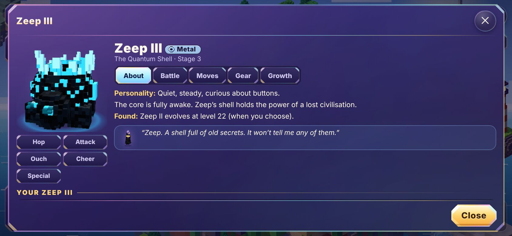</button></figure></div></div><div class="pair"><h3>Terraflora I · details screen</h3><p>The roots now step and the leaf crown and buds move on their own.</p><div class="shots"><figure class="before"><figcaption>Before · Phase 8</figcaption><button class="shot" data-full="screens8b/img/before/detail-terraflora.jpg" aria-label="Terraflora I · details screen, before, full size"></button></figure><figure class="after"><figcaption>After · Phase 8B</figcaption><button class="shot" data-full="screens8b/img/after/detail-terraflora.jpg" aria-label="Terraflora I · details screen, after, full size"></button></figure></div></div><div class="pair"><h3>Inferno</h3><p>Emberix III against Kairyu III: flames rise round it, then a ring of fire and a pillar of flame on the foe.</p><div class="shots"><figure class="before"><figcaption>Before · Phase 8</figcaption><video src="screens8b/video/fx-before-inferno.mp4" autoplay loop muted playsinline preload="metadata" aria-label="Inferno, before"></video></figure><figure class="after"><figcaption>After · Phase 8B</figcaption><video src="screens8b/video/fx-after-inferno.mp4" autoplay loop muted playsinline preload="metadata" aria-label="Inferno, after"></video></figure></div></div><div class="pair"><h3>Abyssal Wave</h3><p>Kairyu III: the deep sea rises behind it and crashes over Igniflare III.</p><div class="shots"><figure class="before"><figcaption>Before · Phase 8</figcaption><video src="screens8b/video/fx-before-abyssalwave.mp4" autoplay loop muted playsinline preload="metadata" aria-label="Abyssal Wave, before"></video></figure><figure class="after"><figcaption>After · Phase 8B</figcaption><video src="screens8b/video/fx-after-abyssalwave.mp4" autoplay loop muted playsinline preload="metadata" aria-label="Abyssal Wave, after"></video></figure></div></div><div class="pair"><h3>World Root</h3><p>Acinus III: roots race along the ground and rise around the foe.</p><div class="shots"><figure class="before"><figcaption>Before · Phase 8</figcaption><video src="screens8b/video/fx-before-worldroot.mp4" autoplay loop muted playsinline preload="metadata" aria-label="World Root, before"></video></figure><figure class="after"><figcaption>After · Phase 8B</figcaption><video src="screens8b/video/fx-after-worldroot.mp4" autoplay loop muted playsinline preload="metadata" aria-label="World Root, after"></video></figure></div></div><div class="pair"><h3>Storm Dive</h3><p>Zephyr III: a storm gathers over the foe, a streak and lightning.</p><div class="shots"><figure class="before"><figcaption>Before · Phase 8</figcaption><video src="screens8b/video/fx-before-stormdive.mp4" autoplay loop muted playsinline preload="metadata" aria-label="Storm Dive, before"></video></figure><figure class="after"><figcaption>After · Phase 8B</figcaption><video src="screens8b/video/fx-after-stormdive.mp4" autoplay loop muted playsinline preload="metadata" aria-label="Storm Dive, after"></video></figure></div></div><div class="pair"><h3>Overclock</h3><p>Zeep III: current runs up it, then arcs jump to the foe.</p><div class="shots"><figure class="before"><figcaption>Before · Phase 8</figcaption><video src="screens8b/video/fx-before-overclock.mp4" autoplay loop muted playsinline preload="metadata" aria-label="Overclock, before"></video></figure><figure class="after"><figcaption>After · Phase 8B</figcaption><video src="screens8b/video/fx-after-overclock.mp4" autoplay loop muted playsinline preload="metadata" aria-label="Overclock, after"></video></figure></div></div><div class="pair"><h3>Solar Flare</h3><p>Lumi III: a crown of sunlight over the foe, then the rays crash down.</p><div class="shots"><figure class="before"><figcaption>Before · Phase 8</figcaption><video src="screens8b/video/fx-before-solarflare.mp4" autoplay loop muted playsinline preload="metadata" aria-label="Solar Flare, before"></video></figure><figure class="after"><figcaption>After · Phase 8B</figcaption><video src="screens8b/video/fx-after-solarflare.mp4" autoplay loop muted playsinline preload="metadata" aria-label="Solar Flare, after"></video></figure></div></div>
  </section>

  <section id="evolution"><header><h2>Evolution</h2><p>The names keep the convention (Monster / Monster II / Monster III, unchanged data). As with Aimza, each stage shows its growth: the first form is quicker and bouncier, looks around more and wags more; the second is the line’s baseline; the third breathes deeper, moves with more weight, reaches each pose later and holds it, and calls lower, with an extra body tone. Anatomy that a later form gains (wings, legs, crowns, orbiting stones) moves on its own as soon as it appears. The evolution ceremony reveals the new form playing its own victory and voice.</p></header>
    <figure class="vid"><figcaption>Emberix · Emberix II · Emberix III, victory</figcaption><video src="screens8b/video/evo-emberix.mp4" autoplay loop muted playsinline preload="metadata" style="aspect-ratio:900 / 260" aria-label="Emberix · Emberix II · Emberix III, victory"></video></figure>
    <figure class="vid"><figcaption>Zephyr · Zephyr II · Zephyr III, attack</figcaption><video src="screens8b/video/evo-zephyr.mp4" autoplay loop muted playsinline preload="metadata" style="aspect-ratio:900 / 260" aria-label="Zephyr · Zephyr II · Zephyr III, attack"></video></figure>
    <figure class="vid"><figcaption>Gaiaroki · Gaiaroki II · Gaiaroki III, special</figcaption><video src="screens8b/video/evo-gaiaroki.mp4" autoplay loop muted playsinline preload="metadata" style="aspect-ratio:900 / 260" aria-label="Gaiaroki · Gaiaroki II · Gaiaroki III, special"></video></figure>
    <figure class="vid"><figcaption>Lumi · Lumi II · Lumi III, idle</figcaption><video src="screens8b/video/evo-lumi.mp4" autoplay loop muted playsinline preload="metadata" style="aspect-ratio:900 / 260" aria-label="Lumi · Lumi II · Lumi III, idle"></video></figure>
    <div class="pair"><h3>Emberix · the same call, stage by stage</h3><div class="sounds"><div><b>Emberix</b><audio controls preload="none" src="screens8b/sound/emberix-tap.mp3"></audio></div><div><b>Emberix II</b><audio controls preload="none" src="screens8b/sound/flaremon-tap.mp3"></audio></div><div><b>Emberix III</b><audio controls preload="none" src="screens8b/sound/infernox-tap.mp3"></audio></div></div></div><div class="pair"><h3>Gaiaroki · the same call, stage by stage</h3><div class="sounds"><div><b>Gaiaroki</b><audio controls preload="none" src="screens8b/sound/gaiaroki-tap.mp3"></audio></div><div><b>Gaiaroki II</b><audio controls preload="none" src="screens8b/sound/terraki-tap.mp3"></audio></div><div><b>Gaiaroki III</b><audio controls preload="none" src="screens8b/sound/rockraki-tap.mp3"></audio></div></div></div><div class="pair"><h3>Lumi · the same call, stage by stage</h3><div class="sounds"><div><b>Lumi</b><audio controls preload="none" src="screens8b/sound/lumi-tap.mp3"></audio></div><div><b>Lumi II</b><audio controls preload="none" src="screens8b/sound/lumi2-tap.mp3"></audio></div><div><b>Lumi III</b><audio controls preload="none" src="screens8b/sound/lumi3-tap.mp3"></audio></div></div></div><div class="pair"><h3>Zeep · the same call, stage by stage</h3><div class="sounds"><div><b>Zeep</b><audio controls preload="none" src="screens8b/sound/zeep-tap.mp3"></audio></div><div><b>Zeep II</b><audio controls preload="none" src="screens8b/sound/zeep2-tap.mp3"></audio></div><div><b>Zeep III</b><audio controls preload="none" src="screens8b/sound/zeep3-tap.mp3"></audio></div></div></div>
  </section>

  <section id="motion"><header><h2>Reactions and gaits</h2><p>Hits, heals, guards, victories and defeats are shared styles, performed in each creature’s own way: livelier lines move bigger and snappier, heavier and older forms later and smaller. Floating parts answer too (they draw in on a guard and flare on a special).</p></header>
    <figure class="vid"><figcaption>Sylvaneer III · hit · heal · defeat</figcaption><video src="screens8b/video/react-sylvaneer3.mp4" autoplay loop muted playsinline preload="metadata" style="aspect-ratio:900 / 260" aria-label="Sylvaneer III · hit · heal · defeat"></video></figure>
    <figure class="vid"><figcaption>Voltar II · heavy hit · guard · victory</figcaption><video src="screens8b/video/react-voltar2.mp4" autoplay loop muted playsinline preload="metadata" style="aspect-ratio:900 / 260" aria-label="Voltar II · heavy hit · guard · victory"></video></figure>
    <figure class="vid"><figcaption>Acinus II · Kairyu II · Pyro-Phoenix II, walking</figcaption><video src="screens8b/video/gaits.mp4" autoplay loop muted playsinline preload="metadata" style="aspect-ratio:900 / 260" aria-label="Acinus II · Kairyu II · Pyro-Phoenix II, walking"></video></figure>
    <figure class="vid"><figcaption>Phase 8 (top) and Phase 8B (bottom): Emberix III attack · Sylvaneer III special · Voltar III victory · Gaiaroki III idle</figcaption><video src="screens8b/video/cmp.mp4" autoplay loop muted playsinline preload="metadata" style="aspect-ratio:1200 / 520" aria-label="Phase 8 (top) and Phase 8B (bottom): Emberix III attack · Sylvaneer III special · Voltar III victory · Gaiaroki III idle"></video></figure>
  </section>

  <section id="sound"><header><h2>Sounds</h2><p>Original, synthesized in code like the Phase 8 voices: no recordings, nothing to license. Each line has its own voice (pitch, timbre, call shape, its element’s textures); every form uses it at its own pitch. Same rules as Phase 8: their own bus with a compressor, at most six at once (three for idle, tap and step sounds), never the same cue twice within 120 ms, silent when sound effects are off. Each line’s attack and special are with its line above; here are a few more.</p></header>
    <div class="sounds"><div><b>Sylvaneer III · victory</b><audio controls preload="none" src="screens8b/sound/sylvaneer3-victory.mp3"></audio></div><div><b>Aquaflora II · heal</b><audio controls preload="none" src="screens8b/sound/aquaflora2-heal.mp3"></audio></div><div><b>Pyro-Phoenix III · victory</b><audio controls preload="none" src="screens8b/sound/pyrophoenix-victory.mp3"></audio></div><div><b>Meta II · hurt</b><audio controls preload="none" src="screens8b/sound/meta2-hurt.mp3"></audio></div><div><b>Acinus III · defeat</b><audio controls preload="none" src="screens8b/sound/calyxar-defeat.mp3"></audio></div><div><b>Voltar II · victory</b><audio controls preload="none" src="screens8b/sound/voltar2-victory.mp3"></audio></div></div>
  </section>

  <section id="tests"><header><h2>Tests and performance</h2><p><b>Tests:</b> 679 of 684 in the final run (see Tests). The new Phase 8B suite (46 checks) builds and validates all 58 forms, compares their blocks with the Phase 8 build, checks that no two share an animation, plays both moves of every form in the arena (and the foe side, and with Reduce Motion), runs battles with their voices, opens a details screen and feeds, and renders every voice.</p></header>
    <div class="pair wrap"><table><thead><tr><th>Suite</th><th>Result</th></tr></thead><tbody><tr><td>Baseline</td><td class="n">5 of 5</td></tr><tr><td>Campaign</td><td class="n">60 of 60</td></tr><tr><td>Save migration (v0.6)</td><td class="n">22 of 22</td></tr><tr><td>Game modes</td><td class="n">41 of 41</td></tr><tr><td>Forge</td><td class="n">53 of 53</td></tr><tr><td>Dev 8 (rules)</td><td class="n">49 of 49</td></tr><tr><td>v0.6 (browser)</td><td class="n">48 of 48</td></tr><tr><td>dev7 (browser)</td><td class="n">30 of 30</td></tr><tr><td>dev8 (browser)</td><td class="n">42 of 42</td></tr><tr><td>env1 (browser)</td><td class="n">20 of 20</td></tr><tr><td>env1.2 (browser)</td><td class="n">10 of 10</td></tr><tr><td>library (browser)</td><td class="n">11 of 11</td></tr><tr><td>env3 (browser)</td><td class="n">19 of 19</td></tr><tr><td>env4 (browser)</td><td class="n">10 of 10</td></tr><tr><td>ui5 (browser)</td><td class="n">12 of 12</td></tr><tr><td>ui6 (browser)</td><td class="n">45 of 45</td></tr><tr><td>arena7 (browser)</td><td class="n">30 of 30</td></tr><tr><td>bench-battle (browser)</td><td class="n">31 of 31</td></tr><tr><td>perf-fix (browser)</td><td class="n">19 of 23 in this run (23 of 23 in the first full run); see below</td></tr><tr><td>showcase8 (browser) · updated for Phase 8B</td><td class="n">38 of 38</td></tr><tr><td>p8fix (browser) · updated for Phase 8B</td><td class="n">38 of 38</td></tr><tr><td>roster8b (browser) · new in Phase 8B</td><td class="n">47 of 47 after a test fix (46 of 47 in this run); see below</td></tr><tr><th>All 22 suites</th><th class="n">679 of 684 in the confirming run</th></tr></tbody></table></div>
    <div class="notes">
      <div class="note"><b>First full run: 682 of 682</b><span>Before the last small edits (the evolution-ceremony checks, Terraflora’s crown in its quirk, a roster voice in Sound check). The confirming run on the final build took 21 minutes.</span></div>
      <div class="note"><b>Phase 7 frame-rate test: 4 checks</b><span>Timing-sensitive, not caused by Phase 8B. Run alone three times on each build, it failed the same 4 checks once on each (Phase 8B run 1, Phase 8 run 2), with the same signature: its simulated struggling device hogs the main thread from a separate frame callback, and when that runs before the render loop the loop cannot see it. Left unchanged.</span></div>
      <div class="note"><b>Roster suite: 1 check, fixed</b><span>A foe’s Solar Flare (30% stun) stunned Zeep III, so its pressed Overclock was skipped. The suite’s battles now use fixed rolls; re-run alone, 47 of 47.</span></div>
    </div>
    <p class="muted"><b>Performance</b>, desktop software graphics at 844×390 @2×, Balanced, Island Boss room, Phase 8 → Phase 8B. Software rendering overstates graphics work; compare before with after only.</p>
    <div class="pair wrap"><table><thead><tr><th>Battle</th><th>Render cost per frame</th><th>Draw calls</th><th>Triangles</th><th>CPU per frame</th></tr></thead><tbody><tr><td>Emberix III vs Kairyu III</td><td class="n">87.2 → 94.3 ms</td><td class="n">20 → 21</td><td class="n">19,034 → 21,422</td><td class="n">1.46 → 1.87 ms</td></tr><tr><td>Cannonis III vs Acinus III</td><td class="n">90.9 → 98.4 ms</td><td class="n">19 → 19</td><td class="n">27,728 → 32,630</td><td class="n">1.24 → 1.96 ms</td></tr><tr><td>Lumi III vs Zeep III</td><td class="n">85.8 → 93.9 ms</td><td class="n">20 → 21</td><td class="n">16,652 → 16,894</td><td class="n">1.0 → 1.42 ms</td></tr><tr><td>Zephyr III vs Gaiaroki III</td><td class="n">94.8 → 104.9 ms</td><td class="n">20 → 21</td><td class="n">23,410 → 25,946</td><td class="n">1.06 → 1.4 ms</td></tr></tbody></table></div>
  </section>

  <section id="limits"><header><h2>Limitations</h2></header>
    <div class="notes">
      <div class="note"><b>Same sculpts, new life</b><span>The roster keeps its blocks exactly, so silhouettes, colours, portraits and cards cannot drift from the approved designs. They were not re-sculpted at higher detail as the three showcase monsters were; that would be a separate art pass, one line at a time.</span></div>
      <div class="note"><b>Shared styles</b><span>Lines share some attack, victory and defeat styles (for example the punch). No two forms move identically, but those pairs are variations rather than unique choreography.</span></div>
      <div class="note"><b>Small first forms</b><span>Lumi I (a floating shell) and Pyro-Core I (a pebble with arms) have few parts to move; they rely on whole-body motion, their wisps or arms, eyelids and effects.</span></div>
      <div class="note"><b>No bloom</b><span>As in Phase 8, glow is emissive voxels, a breathing pulse and ground light, not a bloom effect.</span></div>
      <div class="note"><b>Not tested on a real iPhone</b><span>All captures and measurements here are from desktop software graphics. Please check sound balance and smoothness on the phone.</span></div>
    </div>
  </section>
</main>
<dialog id="zoom" aria-label="Full-size image"><form method="dialog"><button>Close</button></form></dialog>
<script>
  const dlg = document.getElementById('zoom'), zi = document.getElementById('zoom-img');
  document.addEventListener('click', (e) => { const s = e.target.closest('.shot'); if (!s) return; zi.src = s.dataset.full; zi.alt = s.querySelector('img').alt; if (dlg.showModal) dlg.showModal(); });
  document.querySelectorAll('.seg button').forEach((b) => b.addEventListener('click', () => { document.body.dataset.view = b.dataset.view; document.querySelectorAll('.seg button').forEach((x) => x.setAttribute('aria-pressed', String(x === b))); }));
  // videos only play while on screen (and not at all with Reduce motion)
  const still = matchMedia('(prefers-reduced-motion: reduce)').matches;
  const io = new IntersectionObserver((es) => es.forEach((en) => { const v = en.target; if (still) { v.pause(); return; } if (en.isIntersecting) v.play().catch(() => {}); else v.pause(); }), { rootMargin: '100px' });
  document.querySelectorAll('video').forEach((v) => { if (still) v.removeAttribute('autoplay'); io.observe(v); });
</script>
